2014-5-29太空学院第12次教学
创建时间：2014-04-22 20:52 修改时间：2014-04-22
20:52 作者：KESHE_HUMAN
<视频下载：http://pan.baidu.com/s/1c0tgb6K 由VAO提供
口译：漫步环宇
录音：漫步环宇
打字：KESHE_HUMAN
复制：KESHE_HUMAN
统合：KESHE_HUMAN
00:00:00开始
RICK：好的，我们现在的情况怎么样了呢？听到我在说话吗？让我来看看摄像头在哪里。凯史先生你那边情况怎么样，我们现在已经进入了LIVESTREAM实时频道。但还需要几分钟。
KESHE：没有问题，我们这边已经准备好，你们那边今早情况怎么样呢？
RICK：我们这里现在已经不是早上，是半夜了。
KESHE：我知道你们那是半夜了，我想是把你们唤醒了。
RICK：没有没有。实际上我没有睡，也不算是唤醒了。
因为实际上我并不会经常在早上凌晨4点钟收到你那边的唤醒服务电话。所以这也是很有趣的一件事情，都能听到我在说话吗？
KESHE：好的，当然这也可以通过电子邮件来进行唤醒服务，开个玩笑。（笑）
RICK：好的，我想我们可以从这里就开始我们正式的第12次的知识寻求者的网络教学。
某人：你看看凯史或者那边的声音调整的如何了？
RICK：好的，那么这是第12次知识寻求者的网络教学，我们今天请到了太空学院的知识寻求者和凯史基金会的凯史先生，我们请他们来谈谈本周发生了哪些情况，然后会告诉我们最新的进展，我知道她们会将重点放在福岛的实验和研究上，我们也很高兴也会看到更多相关的PDF文件，那么这也是最新来自凯史基金会的4份相关报告，我们也可以从它的网站上下载到这些PDF文件，我们也会谈论在今晚谈论一些其他比较有趣的情况，好的，我们现在就把麦克交给来自太空学院的人让他们来谈一些，好的，那么现在由他们和各位交流。
KESHE：早上好，各位。今天我们试图跟各位看看是否先如果有任何的问题，这可能跟之前不太一样，就是我们今天先让大家提出有关测试的问题，然后再进行相关的问题。
RICK：首先，就我个人来说呢，我当然会有个问题就是有关利用黄铜材料这样一个问题，制造这样一种环境来在反应器设置内部制造出等离子体，特别来说就是黄色球体，我知道它们有不同合金（比如锌）的黄铜，也就是黄铜本身有不同的成分在它当中，其中会有一些矿物质的痕迹，在黄铜当中，以便能够产生不同的颜色，所以我想问的就是是否有不同的黄铜会对这种纳米涂层的处理有任何的影响，包括在球体的结构当中，我想知道在太空学院的知识寻求者在使用中用的黄铜是哪类的，所以我希望凯史先生今早能够跟我们解释一下有关情况，在用到黄铜的反应器的过程中他们可能会遇到哪些情况，所以我非常希望得到在太空学院的知识寻求者在使用黄铜方面的情况有更多能跟我们大家分享的情况。这样能够让我们在今天收听网络教学的这些朋友能够知道。如果其他人在这方面有不同意见和见解，我也会非常高兴的听到你们的声音，可以在这方面跟我们来分享一下相关的情况。我们现在也是从这个话题来开始讨论，就是我会在这个过程中收集一些氢氧化钠，用在这样一个图层处理过程当中。当然我也会接受其他的一些建议。
KESHE：我们经常用的这种情况就是在利用黄铜方面，在它的中心的鞘这个地方，在2个反应器的核中用到过，其中一个是MARKO的反应器，不是2个只是一个，我们只是用到了MARKO的反应器，我们看到我们所对核心做的情况就是它本身是一个完全钢结构的内核，我们所做的就是从它的南极加入了一个黄铜的鞘（原词：BIN，结构不明），给它放到了内核的中心，它的形状就很类似在顶端有一个小球的结构，这个是JOHN切割出来的，在这上面进行了纳米涂层的处理，然后我们对它进行了差不多几周的测试。我们观察到，在几天前把这3个反应器从星体组合中移除，就是在几天前的时候，然后我们试图去观察各种状态下每个个体的特征，所以我们能够看到一个很大的改变在它的标准线的中心，大约1点多到2个（单位不明）这样一个状态或形状，或多或少从北边和南边，我们要决定就是去开始去真正的理解内核当中等离子体的一个结构。这个内核实际上各位之前也看到过，在它的上面有黄铜，然后来测量等离子体的能量，那么这个等离子体的能量实际上各位之前也看到过，以及在它内核当中等离子体的层这些能量，那么很有意思的就是我们开始试图去开始分析这个情况，有相关的数据，这也是和MARKO和JOHN试图去花些时间一点点的去测量一些它的场体，那么在它的上面出现了一些很不同的情况。那么在最后我们JOHN和MARKO给测量器制作了一个安装了一个固定托盘，这样我们可以得到一个精确的数值以及测量出的等离子体的这些数据。实际上就是说从今天起，我们针对第一个内核进行相关调整或者说矫正，也就是针对所说的这个内核。所以基本上来说，它实际上所展示的就是它有这种可能，就是我们做的就是往里面输入了氢气，氮气，氦气，氩气以组合的形式，，实际上我觉得应该是8加4个这样的一种组合。然后在这个过程中有14个氢气，我们在内核当中看到了等离子体的产生，实际上就是出现，然后我把这个数据就交给了MAREK进行更多相关的研究，这也是第一次我们用到了这种能量，就是黄铜进行测试，那么下面我把交给MARKO解释相关的情况。
MARKO：谢谢，我在用的这个反应器它在运行的时候，实际上这个反应器是凯史先生交给我来工作的是几年前完成的设计，实际上在凯史基金会发布的那些图片当中我们可以看到它的这个设计。那么它有4个黄铜的环在上面来观察反应器内部的现场情况，我们一点点的从上面打开了这个反应器，从底部的地方，然后从底下插入了一个鞘到反应器中心的地方，那么这个黄铜的鞘实际只是我们所做的利用黄铜的唯一的实验，黄铜经过了纳米涂层处理然后从底部放到反应器的中间，当然还有一个从顶部置入的一个鞘在反应器的中间，那个鞘上的洞是用于输入气体的，并且它们这种从顶部到反应器中间的链接，这样的话我们可以观察它内部的环境，于是我们就开始了测试，或许是在一个月之前的时候，那么在这个反应器当中我们最开始进行应用到了不同的气层，就想凯史先生之前解释的8个剂量的氩到4个剂量的氦，还有一步步的氢。我们利用这些气层作为一个保护罩在等离子体和反应器内胆之间，这样的话不会损失等离子体，然后我们观察到一些来自反应器的场体，然后它当然还有一些相关的变化在不同的数值上，就是反应器方面，就是它和其他的反应器的设置有一些改变，有的要改变电极的转动速度，还有增加相关的需要改变的数据，所以我们决定我们当时用到了交流电机，这个电机并不是非常稳定尤其当我们尝试去对电机加入一些特别的转数的时候实际上是非常困难的，来确定一个正确的速度，所以这是为什么我们就决定改变电机。所以我们本周一我们决定把交流电机改变成直流电机就比较容易调节合适的速度，当我们把反应器放到工作台的时候测量场体，实际上我们没消耗掉任何气体，就是改变电机转数之前，我们把气体还有等离子体留在了反应器当中，当我们改变电机后我们来测量它的场体，我们就测量到反应器中有增加的场体，数据就是它的磁场传感器有磁场的一个增加，这是在3个方向（X-Y-Z轴上）上就是立体3维上都看到了改变，当我们改变了传感器的方向的时候，我们观察到了在反应器的中心出现了峰值的数据，这个数据就出现在鞘的边缘的这个地方，所以等离子体它实际上就停留在鞘这个地方，我们看到它在那个地方有超过其他环境3倍等离子体的强度，
然后我们就试图去看到会有一个什么样的改变，如果我们对场体进行真空处理，把其中的气层中气体给清空处理掉。在真空处理的过程当中，我们实际上并没有损失掉它其中的等离子体的场体，它仍然还在那里，即使我们把气层去掉它们还在反应器当中中心的位置，也就是说它实际上仍然还会将等离子体保留在中心的位置。那么某种引力场在鞘上的纳米涂层实际上就可以创造出一个，那么某种类型引力场来吸引等离子体，某种程度上来说你不需要任何外部的磁场来压制等离子体，从外部向中心对它进行压制，我们通常看到现今的科学界他们用的方式就是，他们试图用磁环来把等离子体保留在中心的位置，但是利用我们现在用到的黄铜制作纳米材料，在实验当中，我们可以观察到等离子体它实际上就出现在了中心位置上，所以这也是我们的试验和经历，那么在黄铜当中你会有不同的合金或者材料在里面，因为这个关系也就会有来自不同纳米涂层的光谱，所以你不需要只用一种材料，也可能因为这个情况可能来用它进行工作可能是更困难的，实际上就是说利用这种材料将是更困难的，因为它的特征在不断改变，所以确定它的属性是比较困难的。比如在某一种状态下，锌可能会起到更大的作用。在另外一种情况就是铜可能起到更大的作用。我的意见就是在开始试验的时候，如果你去用一种材料就会比较简单了就是铜，那怕用不锈钢材料，我知道在上面进行纳米涂层的处理是非常困难的。但实际上不锈钢材料也是由合金所构成的。由于这些不同元素你会发现有不同元素的相互作用就在这些合金当中，我不知道我在那个时候也不是很清楚的理解，就是不锈钢的材料，就是它内部的这些原子和等离子体是如何相互运行的，实际上就是在每个原子当中，在反应器的内部的原子，在理解相关这些元素和反应器核心这些部件的等离子体的相互作用，就是在反应器内部的原子，因为等离子体位于中心所以要和环境产生一个相互的作用。如果你在这个环境中有不同的材料的话，实际上它就会变的更难去工作，或者说来定义这些不同的等离子体的状态情况，所以当时我们就计划用黄铜进行实验，我们也可以感受到这样也是不错的计划，所以我们可以体验到黄铜的不同的特征。
VINCE：你是如何对它进行纳米涂层的处理的呢？
MARKO:实际上我们对它的纳米涂层的处理和其他的纳米涂层处理基本是一样的，放入烧碱溶液当中，在制作有关福岛的纳米材料的程序是一样的。
VINCE：哦，好的，我知道了。实际上也就是我们对其他材料进行纳米涂层材料的处理方式是一样的,就好像制作福岛纳米材料的程序是一样的。由于它是由不同的材料构成的，所以它就会具有不同的磁引力场的光谱，所以由于在等离子体的运行过程当中，因为它本身就引起了对等离子体本身牵引这样一个作用。所以它实际上就好像是将这些等离子体就拉向自身的情况，这样就把它吸引到了它的位置上，当你把气体从不锈钢的钢当中去掉的时候，那么它就会出现这种情况，我的理解是正确的吗？
MARKO:是的，就是这样的。这实际上就是我们对实验的主要观察，你也可以把它结合在你自己的实验当中。所以如果在反应器中有中心柱的话它也要进行涂层处理。你也可以使用些可以进行纳米涂层处理的材料。这样的话就可以在中心位置把等离子体给保留住，就是最初的时候我们开始在其中输入气体的层的时候，即使是在我们没有任何气层存在的时候。
VINCE：是的，基本上来讲就是你之前开始的时候就制作出了等离子体。是这样吗？你以前需要在反应器当中那么有这些气层的存在，以便能够对等离子体进行绝缘，实际上就是一种隔离吧。因为它还没有形成，或者说它还没有在最小的规模下被打开呢，所以你需要在这个时候出现这样的一个气层，这样的话等离子体可以在其中，对整个的气层就是在其中有一个引力的一个作用。在它其中进行运行，就是在中心鞘的周围去运行。所以你需要在这个时候出现这样一个气层，由于中心的鞘本身是由黄铜材料制作的，那么我想问的就是用黄铜来制造这个中心鞘是否有特别的含义呢？因为它要和不锈钢材质相互作用，或者说是因为你们需要去选择其他的一些材料相互作用。
MARKO：没有，实际上这里面并没有特定原因，这是因为我们就能够找到这些材料，实际就是因为这个原因，所以我们就进行了测试，希望在测试中能够了解到这些材料有什么样的特点，对于气层来说，确实我们利用了气层来制作了等离子体，实际上你也可以在没有气层的情况下来制作等离子体，实际上我们当时也没有刻意的这样去做。也许在下一次的实验当中，我们也会用到这个内核的来进行实验，但这次我们就不会用到气层了，但是现在我也说不准。
VINCE：好的，我想问的就是说在鞘结构上面有没有任何的通道或者气管呢？它就是一个固态的鞘吗？
MARKO：是的，它只是个固体的鞘。
VINCE：好的，谢谢。
MARKO：没有问题。
某人2：我还有一个有关其他金属的问题，那么对它进行了纳米处理后，我想问的就是银能否用同样的方式进行纳米涂层的处理呢？就是利用烧碱溶液的这种方式。
MARKO：是的，可以的，我们也试图进行纳米涂层处理，就是对不锈钢的材质。实际上就是利用了电解液，然后在一层很薄的银上面进行了纳米涂层的处理。但是我们没办法在它上面加上这层纳米涂层，可能是我们还没有在其中加入足够多的烧碱的材料，当时我也搞不太清楚，但是凯史先生他在这方面的涂层处理上就有一些经验，也就是说在银上面进行纳米涂层处理他是有经验的。
某人2：他也是在利用同样的方式然后利用烧碱去对银进行纳米涂层处理吗？
MARKO：这个我也不太清楚。
我想在之前的几次网络教学中凯史先生也提到过就是他说要看使用的能量多少。也就是说用这样的一些材料能量的多少来把原子从材料当中给驱离出去，从原来的地方把原子挤出来。当然是需要通过往其中加入能量，当然你也可以使用热量。这些热量可以来自于烧碱溶液或者是热水来对材料本身进行加热的处理，我想这样做也是可以的。我的理解是正确的吗？
MARKO：是的，但是这里还有另外一个问题需要注意就是你用不锈钢材质，在上有一层很薄的银的话也是很困难去进行的，要比全部都是银材质的更加困难一些。所以说确实是这样的就是温度加热是很重要的，能够从材料当中脱离出来，实际上你就在这个过程中释放除了热的场，就是这种场体，我们需要的场体，也就是说原子吸收了这些场体就会从结构当中脱离出来，然后它们没有办法再返回到融合会原来的纳米材料当中，就是这些单个的原子，因为这个过程中纳米涂层就被制作出来了。就制造出了类似像这种“材料-间隙-材料”这种纳米涂层，就是材料它就会出现这些孔洞的情况。那么这样我们可以制造不同的层这要取决于我们在烧碱当中，我们用到了多少的能量，这样我们可以制造出不同的层。当然也可以利用到不同的材料。那么这样我们就可以在材料之间制造出不同的间隙，所以这些纳米涂层还有它这些空洞，还有纳米涂层这些原子，这些纳米涂层被制造出来，它的磁引力场，在下一个程序当中，就是当我们制造甘斯的材料，在那些盐溶液当中，同时在其他的一些工艺当中，那么它的磁引力场就可以被得到应用的过程当中。
某人2：所以我还有另外一个有关可乐瓶的问题，或者说需要在就是纳米涂层，就是在那个状态下也可以用开水吗？或者说在这个过程中需要用温度比较低的水在可乐瓶中？
MARKO：你可以用滚开的水，但是你要小心，当你把开水倒进到可乐瓶当中的过程，他会产生收缩的情况会鼓出来，所以你要非常的小心。所以我觉得你最开始要做的时候要给它一个保护，要对它非常重视。
某人2：谢谢。还有一个有关制造不同类型的甘斯的问题。我现在就制造出了相当规模橘黄色的甘斯，我想问它也是CO2的甘斯吗？或者说是不同气体形成的吗？
MARKO：那么这个橘黄色它的成分可能主要是有CH3构成的。（KESHE背景里说：有些测试里证明是CH3。）那么你应该需要利用光谱仪来测试一下之后才能确认它到底有哪些成分，它取决于你创建出了什么样不同的场体，就是利用你的纳米材料制造出了什么样类型的场体，那么我还曾经看到白色材料的光谱仪的分析结果，它本身也是由我们的一个实验制作出来的，它就显示出了它含有锌的成分，不是锌的成分，就是OH，但问题是碳是从哪里来的？然后我就问了那个做实验的伙计，他说他也观察到了在溶液当中出现到了一种非常小的气泡的情况，我们实际上自己做的实验当中也观察到了这些气泡的存在。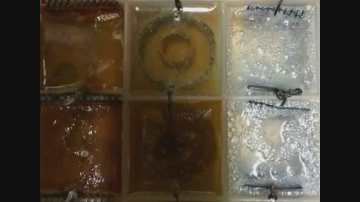所以说在这些气泡当中一定会有些气体的存在，那么这会是什么气体我现在也说不清，但是会不会有氢气呢？或者氦气？我也不太清楚。不论怎么样，我们可以说在这个过程里面确认有氧气的存在，所以不管怎么说，你可以说这里面有氢气，他们知道氧气是16，而碳是12，所以说能够获得这些，它可以来自氧气，那么也可以来自于环境。（凯史在背景说话）所以我们之前做的测试，它实际上就会从环境中吸收CO2。但是在这里面在光谱仪当中看不到它成分的存在，他们当时用的红外线光谱仪当中观察不到所有的成分，也就是说在光谱仪就没有看到所有成分，他们观察到是CO3而不是CO2，那么这就是相关的情况。（第一次翻译截止00:33:00）
KESHE在背景说：这一切都来到了碳上面，因为CO2它是含有水的，然后氢气它是其中的一个源头，实际上是CO2的转换之后到了水中，这是为什么。
MARKO：好吧，我把麦交还给凯史先生让他来说吧。
KESHE：好的，我说完还会把麦交还给MARKO，O3实际上是来自于吸收CO2进入到水中的这个过程中，问题就是这个过程中会向外释放一些氢气和氧气，因为我们曾经在一个立方米这样的容器中对它进行了一个实验，这个过程我们可以非常清楚的来解释它就出现这种碳饱和，或者CO2饱和的情况，当时实验就像是在比利时的核中心所做的那样，这是在3-4年前或者更长一段时间的事情了，我们当时就观察到了在吸收CO2整个的过程，当你把CO2转换进入到水的环境当中之后它就会释放出CO3，但是它始终需要一些东西就是元素以便于能够使得自己沾附在上面，这也是其中一个原因，蒸馏水，如果使用来自水龙头的那种自来水的话，当我在做实验的时候我在制作纳米涂层处理的时候它会含有不同的成分，那么当你制作材料的时候比如你有钙在溶液当中，这是很正常的事情，你把它放在水中，水中的钙会漂浮在纳米涂层的表层上面，实际上就开始了CO3的制造或者产生的过程，也是在核研究中心通过光谱仪的一个检测中了解到这个情况，所以你想获得到一种非常同质平滑的纳米涂层的话，我的建议就是要去使用这种蒸馏水，即使是你从市场上购买的矿泉水，或者自然水。
实际上很多都是他们从家用的自来水管线中获取到的，然后就说这些是矿泉水或者自然饮用水，这些情况之前在英格兰几年前就有过报道，其中就报道了这样一个情况，其中有个人就销售这种自然矿泉水，然后把这些水装罐然后放在盒子当中去销售，实际上他的水都是从他家后花园的自来水系统获取到的，但是他的水销售业是很火爆的，因为他住的地方也是一个很有名的村庄，因为那里有自然水，但最好的情况就是去购买那些蒸馏水，这样的话你就会很清楚你的水是什么成分，另外一方面MARKO谈到了链接到和中心鞘有关的等离子体，之所以我们有4个中心内核用到了鞘的结构，在这个过程中我们没有用到方盒的设计，这也是这样一个长期试验过程中我们也在尝试用不同的设计，我们也试图使用不同的设计方案，就是说当你想使用在中心的地方使用鞘的时候，之前是会用到放射性的元素，也就是说在中心鞘的地方我们通常会放入一些放射线的元素的，但是在某种程度上，或者说某种方式上，在中心鞘这个地方进行纳米涂层的处理，它会给等离子体产生一种稳定性，因为我们制作的大多数反应器它经常会处于一种不稳定的状态或者没有出现中心化的状态，也就是说等离子体会就有一种震动，就好像你有一台奶昔振动器在里面不停的震动，因为当你处于这种高速转动就会有这样一种情况，如果说在高速旋转中碰到内壁的话会将产生一种平衡感也就是稳定性，有了我们中心柱它会起到这样一种作用，就是把等离子体在运行过程中吸引到中心，让它处于在中心运行的状态当中，你提的问题就是如何在银这种材料上制作纳米涂层的问题，实际上也是需要去进行各种设计和测试的实验，来通过这些实验找到方案，通过我们自己在过去这些年的实验还有不同实验的规程，实际上你是可以完成这样一个目标的，因为我们自己甚至已经实现了在黄金的表面进行纳米涂层的处理，而且我们现在还有它的样品，但是整个这样一个加热的的过程的总目的就是要在金属表层出现一种松散的状况，这是自然的过程而不是通过电子电器加热的方式，然后通过这种方式把元素加温加热，那么这样一来整个过程就完全不同了，所以当你在做这些实验的时候就是把这些金属通过这种蒸汽的方式进行处理，比如说你把这些金属片放在烧碱溶液当中，这样的话把它放在烧碱溶液的上面这样一个位置上，这样当它在加热的时候也就是说它会有这种蒸汽出现的时候，这些蒸汽会被吸附到金属片的表面，你在放置的时候就把网格或者金属片就放在烧碱溶液相接触的表面上，这样的话它一旦有加热的过程他们就会有接触，就会加速在金属表面出现纳米涂层的过程，这是自然的方式完成的，但是通过自然的方式制造出来的纳米涂层很容易被消除掉，很容易被摧毁掉。因为它是以一种非常柔软的方式制作出来的，因为当你把纳米涂层给浸泡在烧碱溶液中的时候，那么你会把纳米涂层放在烧碱溶液中浸泡，然后在这个过程中你实际上在后期往里面倒入开水，开水里没有烧碱成分的时候，这样一个动作它实际上就会在金属片上面形成另外一种厚度的纳米涂层，这样的话就形成另外结构的纳米涂层，所有这些纳米涂层实际上都是不同的，如果你去观察它的界面的时候，你会发现所有的纳米涂层的结构都是不同的，比较重要的情况就是你用某种方法没有实现制造出纳米涂层的时候，你就可以去使用其他不同的方式来完成纳米涂层的制作，我就会用到我经常把它称之为一堆或者很多的东西。有不同的成分或者叫一堆TIP（可能就是塑料）（00:38:45听不清）在里面放入很多腐蚀性的这些元素，然后提到特殊的塑料。它并不会很容易出现弯曲，这种塑料也不会出现扭曲，我通常把这些材料浸泡在烧碱溶液当中。如果你也希望在侧面来增加它的烧碱的话实际上你就可以直接把那些材料放到烧碱溶液的上面，如果没有实现的话，那么你就把这些材料给浸泡在烧碱溶液中，这样的话它就可以把这种非常瞬间出现的热量添加到结构当中，就可以实现释放的效果，一旦你实现了它第一层的纳米涂层的制造的话，这样就已经形成了一个条件，就是可以从它的表面把其他的那些也给拽出来或者牵引出来，所以你需要不同的实验来观察利用你手中的这些材料，去进行实验会出现什么样的情况，制作纳米涂层的过程中最重要的一个问题就是，我本人也是需要来对各种不同的材料或者状况进行测试，我实际上也是花费了数年的时间来对不同的材料进行测试，来观察它们会出现什么反应，他们之间的成分会出现什么反应，实际上我们的这些实验中就出现了非常不同寻常的结果，就是在我们制作纳米涂层的过程，也就是说你能以正确的方式制作你就能观察到，你能够在纳米涂层上形成甘斯，在它的上面再继续形成纳米涂层，这是一个非常普遍的经典的情况，这是典型的情况，你也可以做到这样的一个中状况，这也是当然i在制作出这样一种甘斯之后，就无法在过程中制造出更多甘斯，那么这样一种纳米涂层就像是我们说的三明治的结构，这种结构在制造不同的材料过程中有广泛的应用领域，比如说具有涂层的材料，比如说我们需要CO2，如果你成功的在纳米涂层中实现了甘斯的话，CO2的引力场会从环境中把CO2吸引到你的反应器中，CO2的磁引力场就会把环境中的CO2吸入到反应器中，然后你把它放入到机器中，实际上就是我们后面要讲到的制造物质过程中的一部分内部，这个听起来是比较先进的技术，所以甘斯的这一层就是甘斯层这个东西，结构本身就好像保存我们的内存卡这样一个效果，也就是说当你想制造某种材料的时候你使用内存卡，这个材料就会被制造出来，这些都可以在反应器当中的涂层当中得以实现，我昨天的时候和ARMEN就对这个情况进行了实验，那么这个过程当中我们有一个非常非常重要的警告，
一定要非常谨慎，就是我之前昨天也将这个问题向我们的知识寻求者解释，就是在任何情况下都不要去品尝接触这种纳米甘斯的材料，因为这样做的话你可能不知道什么时候会因此丧命的，一个厉害的英雄瞬间就会化为乌有，现在的科学界也是刚刚开始关注这方面的技术，也就是说开始针对这些技术进行各种各样的实验，我也知道在世界上很多的研究院和实验室都已经开始这方面的一些实验，并且已经观察到了这些材料一些特别的属性或者特征，我昨天就对我们的知识寻求者做过解释，其中就提到我们是从事实当中了解到如果你去食用或者消化这些材料。如果你去试图证明自己比较聪明，在尝试上面出现的脂类这些我们称之为脂肪或者脂类的层，上面含有我们所说的氧化铜的一个漂浮物，如果说你在溶液的盒子当中放入了氧化铜的话，当你去对它进行品尝的时候，这些氧化铜它就会陷在你的牙床和面颊之间，它的磁引力场实际上是具有等离子体属性的，它会出现这样一个相互作用在你的下巴这个地方，这样的话它就会和你的甲状旁腺产生一种相互作用，有很高的可能性会和酶的一种结合，氧化铜就会在实验中已经展示出了这种属性，我们也有相关数据，导致耗尽磷这样的结果，如果这样的信息经过编辑置入到你的DNA当中的话，通过你的甲状旁腺，就意味着你的身体就会非常疲倦或者耗尽，然后会拒绝大量的磷元素，身体就会出现这种衰竭的情况，然后会释放拒绝磷元素，之后会发生什么呢？你的甲状旁腺就会去主动的去观察到底发生了什么在你的身体中，然后来进行磷的替换的东西，我们从之前的科学研究中注意到，这是从医学实验中了解到的，来自磷的唯一的转换随着身体把磷转换成钙这个过程，就会把钙转换成磷，就会导致你的骨质酥松，就会使得你的骨骼非常软弱，这样也很容易出现骨折，这是其中一个情况，我们知道有些甘斯材料，它会制作出针对某一种元素出现那种巨大的，大幅度的元素成分的降低，我们有测试的数据，我们也尽力来将这样一个事实告诉每个试图去进行实验的人，但是最终它还是要靠每个人自身的责任来关注重视这个问题，这是为什么我在最开始的时候就说你不要用没有任何防护措施，裸露的手指去碰触纳米材料的原因，如果这样做的话，就会吸收那些材料到你身体中，只要你碰了就感受到了，这样就会通过我的肝脏然后显示出它的一个反应器过程，这是我们要特别提出的一个警告！因为在世界各地有成千上万的人正在制作这方面的实验，能够从这些盐溶液这样一些容器当中制造出各种各样甘斯和纳米材料，这是需要大家重视的问题，他们总想去碰触这些材料，这个过程中会有2-3个情况的出现，第一个就是你没有去清洗这些纳米材料，所以在这些纳米涂层上面仍然还会含有一些烧碱的成分，这样一种痕迹当你对它进行干燥的时候，那么这样的话它就是其中一个潜在的危险，相当于你可能会通过这样一种方式就吸收消化了烧碱的一些成分，它是有腐蚀性的，另外一个情况就是这些纳米的材料会和你身体中的甘斯成分具有同样的结构，这样的话它就会出现直接的吸收，这样最终的结果就是氮气缺乏了，就是氮气你可以给它改变一下，我们也是从事实中了解到在肺部如果出现氮气的改变，就会导致肺炎的情况，也就是说会产生肺炎，肺部的这种肿瘤的出现，很多老年人有各种疾患的人如果换得上了AEIS?就会在肺部当中出现了很多液体，就像肺积水，还有肺炎，就会对肺部产生了这种负面的影响，这种情况出现唯一的原因就是我们经过了科学的验证，就是随着你年龄的增长，体内的层的平衡就会逐渐的改变或者说随着你体质变得更加的虚弱的时候，它就会产生这种平衡的改变，这个改变会改变这种方向，就会改变这种氧气的电离的情况，还有氢气就直接变成了H2O，就是水，就像我昨天跟各位解释的那样，在他们的肺中有2-3升水溶液生成，如果你去测量体重，你会发现这些水在测量前是没有改变的，在医学界有个虚伪的说法就是说肺积水是来自于肺部的运行和你吸入的空气相互作用，也就是说你吸收或者碰触到氧化铜的话，任何其他化学品尤其是那些金属元素，所称的甘斯如果你吸入它们你就会改变肺部的平衡，就会导致肺部的发炎感染的情况，就会形成肺炎之类的这些疾病了。相关数据我们会在时机成熟的时候释放出来，我们有足够的证据来证明就是氮在这个过程中产生了变化，就是由于甘斯造成的，但是现在还有一些相关的原因，就是我们没有去释放这些技术，还是有一些原因的，因为它会给其他人制造出一些额外的问题，但是我现在还是要向给位建议就像我之前所说的那样，在处理所有这些甘斯材料的时候一定要戴好手套不要去碰触它，在某种程度上如果你戴上手套的话不要去揉搓它，就像我之前向我们的知识寻求者展示很多次的那样，你需要用清水去冲洗你的手，在试验之后，用清水冲洗不要去揉搓，如果你清洗过程中揉搓它的话相当于会使得这些元素和你的身体就产生这样的一个更实质的接触情况，就会被你的身体吸收进去了。所以我们的建议大家一定要理解这个建议的重要性，因为现在很多人都在自己家里进行这方面试验，我们不想因此制造出另外的问题，因为你没有了解整个过程因此产生另外新的问题，所以再一次的警告就是不要试图去尝食它，或者你在做实验的时候使得自己暴露在这样一个环境中它就让你有机会去呼吸到，或者吸入到在环境中的甘斯材料，所有这一切都是让我们的科学家和知识寻求者能在将来完全了解整个甘斯的运行情况，并且针对一些具体的情况采取相应措施，这是你如何来吸收能量的，另外一些问题就是我们再次回到之前MARKO解释的这个问题上，比较有趣的一个情况就是我们制作出了等离子体就是利用我们的甘斯材料在纳米涂层中
但同时我们也成功将等离子体保留在中心柱的位置上，我们需要去去除或者打开星体组合这个结构利用7个反应器，这是我们在过去的4周中设置的结构，这样做的原因就是观察到了在一些探测器上出现了数据的极速增长的情况，我们现在经过讨论认为，它是由于一些电器方面的原因造成的，那么当我们的探测器移动的时候，而有的时候数据会更高一些，有的探测器就显示了非常精确的测量数据，就是出现了一个比如说8个甘斯的情况，在（00：49:00没理解）转数也会上下波动，或者完全停止，这就意味着等离子体的一个急速的增长情况，实际上正在发生当中，但是事实上就是当反应器移动或者改变位置的时候，或者改变运转速度那么它即时就会出现其他反应器也会出现转数改变或者停止转动这种情况，它实际上出现这种情况后，和仪器测量出的数据就没有太大关系了，因为我们看到了一个具体的证据，一个实在真实的数据看到转数的改变，我们有3个反应器，那么其中2个，一个是YVAN的反。它最初的伊朗的反应器，中心柱的鞘就停止了运行，这是在终极的过程中，它就出现了停滞的情况，另外2个还是处于停滞的状态，（00:49:45没理解）之所以另外2个也处于停滞状态就是因为它们是半球形的结构，理解进行了完整的纳米涂层的处理，这样它们就完全吸收了等离子体的全部能量，也是来自于等离子体出现的方向上，我们所看到的就是你可能不会有这样的问题，在你的反应器中有它会有一种限制的情况，或者释放出来，这里面存在一个巨大的发展的情况。这也是核物理学家的梦想，在实现热融合的过程中，也就是核聚变的过程中，也就是说等离子体的过程中，我们已经成功实现了等离子体的冷核聚变，这是当今物理学界一个重大的技术突破，这些等离子体它就被保留在，实际上我也在观察它最终被储存在了什么样的一个地方，现在经过我们利用MARKO的装置，进行的实验后，我们现在已经可以百分百确认它的结构，那么上周五的时候我也问到了JOHN，我想是在下午之后的时间，我也想知道他如何制作他的陶瓷反应器的，因为我就怀疑他这些陶瓷反应器中会存在一些孔洞这样的情况，它就可以实现保留等离子体的作用，同时可以释放等离子体，当时我的一个设想，就是ARMEN的双核心反应器也可以实现保留等离子体的作用，就是无论什么时候接近了这种情况，就是当它接近释放的情况的时候，但是当我和我的那些研究等离子体的同事们去进行交流的时候，还有那些核物理学家我们以一种非常直接的方式，我们利用在中心柱这个地方悬在反应器的中心，通过这样一种方式和结构，我们所实现的情况，同时在它的周围安置了6个内核，它们本身都在制造着等离子体，那么就使得我们成功制作除了等离子体的冷核聚变的情况，当这些等离子体它仍然还能够被保持保存在它的位置的时候，也就是在能力装置的中心核的地方，那么它设计的时候被设计成非常小的结构，而且对它进行了一个全面的纳米涂层的处理，这样的话它就能够将那些能量保持住，当某种条件改变的时候，比如说它转动的速度发生了变化，或者其他的环境发生了变化，实际上会改变7个反应器的磁引力场的平衡，这样的话能量就会释放出来。在这个同时就会被其中的一个重要的观察到，会产生这样一种保留的情况，保留它的最大的容量，实际上这个就是YVAN的反应器能做到的事情，因为当它的速度降低后，它就停止了，直到今天位置，还仍然没办法启动它，我们对这个反应器进行了真空的处理，而且还做了一些相关的工作，但是反应器表现出了非常高的等离子体，它的一些属性，当它彻底的无法工作之后，另外一个可以继续工作，也就是它们处于同样一条线上，就是在它的对面就是那个伊朗的反应器也出现了饱和的情况，然后看到MARKO的反应器出现了快速的转数上的增加，所以说在很多程度上，在过去这几周当中我们经过制作各种各样的实验，并且研发出各种不同的相关的东西，我们可以一次次的在线这种状况，就是我们成功实现了等离子体冷核聚变这种情况，但是我们以一种特别的强度或者能量团的方式释放等离子体的话，来自于同样的这些等离子体，在它的内核当中我们可以制作出氦、氢、氮气。或者其他任何材料和物质，这要取决于有什么样的容量和强度，在等离子体中拥有多少质量和容量强度，还有就是氢气当中有多少的电子和质子加入到了罐子当中，就是反应器的中心中，我想后期我们会对这方面的相关情况有更多详细的说明，到时候当MARKO和JOHN他们还有我们所有人都可以把精力集中在其中的一台反应器上，那么我们也不再去做其他任何别的设置了。在针对某一个反应器来更加关注，把精力集中在某个反应器上，MARKO的反应器内核也已经开始运行，现在我们把他设置出来让它运行1.2个星期左右的时间，在这个过程中我们也想观察到它会有什么样的，就是说我们能否从反应器中提取出物质或者材料，因为这样是可能的，但是我们把它看做是从一个反应器到另外一个反应器之间的能量，当我们改变它的转数和饱和度的时候，那么现在的问题就是利用这样一种非常简单的方式，而不去利用任何电器的方式，也不需要任何热量，在这个过程当中就成功的实现等离子体的产生，最终也就实现了材料的生产，同时就可以对材料进行测量，这也是星体当中的物质是如何被制造出来的过程，星体并不是简单的制造物质它会制造出物质的等离子体，比如说氢氦黄金，随着这些元素在星系之间移动或者说在它们壳体当中，当它们遇到了一个合适的环境或者状态的时候，它就会转换成也就是成为那样的一种物质，这也就再一次证明现在的物理学界科学家做的核聚变的这种方式实际上是没有任何意义的，实际上是可以非常简单的，比如你有1L的等离子体，
那你就可以制造出氢气，如果有2L的等离子体，就可以制造出氦气。它是一种测量上的比例，当然我们需要在这方面继续扩展我们的知识，所以在很多方式上面通过这样一种能量的转移带入一些等离子体，那么其中一个反应器就会进入到停止的状态，就像我上周解释的那样，我们不仅成功的实现了等离子体的冷核聚变的目标，它实际上并不是核聚变制造出这种新的材料，它实际上是巨变融合的等离子体的一个目标这样的情况，也就是真正发生的是在它的内核就变成了一种储气罐，这样的话它附近的也就是周围的6个反应器，因为我们当时是这样设置的，它就会出现融合，就会把整个场体实现在中心聚合的情况，这也是它如何实现的过程，但是我想对JOHN和MARKO的反应器将在本周集中要做的就是，增加等离子体在钢结构中心的位置，因为中心有黄铜的涂层，这些都是我们正在研发的一些事情，我们也观察到了一种在制造新材料方面的一种新概念，通过等离子体，它通过的是等离子体实现的而不是通过核聚变热融合这样一种传统方式实现的，或者说是物质的相互对撞的方式，这些方式都是错误的方式，那么这些都是可以得到证明的，我们可以在这样一个设置中制造出黄金，我们之前也解释过原因，也试图去解释它的过程，你甚至可以精确的测量出你需要的气体的量是多少，以及你所输入的是有多少的什么样的材料，然后在某个特定的位置上，在你的纳米涂层之间来制造出你所需要的材料，这是一个自然的现象，这也是我们这个星球生命产生的秘密，氮是从哪里来的呢？它是由于太阳释放出来的这些能量团，所包含的的磁引力场，那么在一些特定的状态下，在我们的大气层上部的地方就成为或者说和氮气相等了，这也是为什么在我们这个星球的大气层顶部产生氮气的原因，这些氮气就会有这样一种情况，就是会对氦产生电离，或者对其他物质进行电离，这就使得氮气成为我们太阳系当中持续不断的供应源头，而不是由星球提供的，这也是为什么氮气始终或者总是会通过下雨的方式出现在地球上，而且有如此高含量的原因，如果地球移动的比较微小的位置的话，它更靠近太阳的话，这样的话我们的星球和太阳它之间所产生的这样一个磁引力场的环境无法再再去持续，氮气的制造的话，我们整个星球上的这些生命最终都会结束的，这也是我们地球没有生命之前的情况，也会是我们这个地球最终会有的一个结果，所以说在很多方式在，在反应器中制造出来的我们的生命它还有这些材料是如何出现产生的，以及这些物质在整个宇宙中是如何产生的，所以在将来在未来的某个时间，比如说几百万年后，当进行再次向里移动，太阳的引力将地球再次向它本身拉近的话，我们这个星球上之前所拥有的氮气它产生的过程就已经无法得以维持了，这样我们星球上的生命就没有办法再次得到维持了，实际上它体现的是整个链条是如何相互关联在一起的，或者说人类需要通过另外一种元素来支撑自己的生命，实际上它是整个元素链这样的一个改变，我昨天也把这样一个过程非常详细的解释给了ARMEN，因为他非常关注这个问题，而且他在这个方面是很有才能的，他可以以不同的方式来完成不同工作这方面是很有天赋的，我昨天就向他解释了这个情况以便于他理解制作出类似这些相关的事情，所以你就需要去理解在宇宙当中它的生命产生出现的整个过程，那么无论这些生命是出现在行星或者星体中，或者海洋中生命是如何产生的，或者在液体中，整个过程就是你改变了它氮气水平的话就会在你的肺部制造出一些问题，实际上就和我们在地球大气层顶部，如果你改变了氮气制造过程的话就会出现问题是一样的，通过把肺部去除，星球就会把氮气制造过程关闭掉，你就会产生同样的问题，很可能它就存在很多问题，这里面有很多类似的转换，哦，我这有个电话。你就会出现这样的问题，就是在肺部的氮气水平发生了改变，它就会产生更多的水分，然后就会容易出现肺炎，所以说如果我们的大气环境改变了的话，我们的地球上会出现类似大洪水的这种情况，因为这个状态的改变就会在这个星球上产生出新的大量的水源，那么在我们凯史基金会将要释放公布的这些信息当中，它就包含了一些巨大的突破性的技术，就是有关氮气方面的一些信息，这些信息我们将会在未来这些日子中发布出来。（第二次翻译截止01:00:27）
我们拥有相关数据，而且正对这些数据进行分析，我们也会和相关政府官员进行讨论就是如何将这些信息传播给普通民众让他们知晓，整个状况就是你需要了解整个的过程就是纳米涂层和甘斯它们都是如何来工作的，也就是说纳米材料是如何工作，甘斯是如何工作的，我们的大气层表层氮是处于甘斯状态
而不是原子级的状态，这是另外一个状态和位置，在大气层上表层的这些材料我们知道，我们之前也对这个问题进行过讨论，在所有星球系统所有宇宙系统当中，在等离子体的状态当中，实际上非常类似你在做相关纳米材料的情况所发生的事情，星球是固体固态的，随着它状态的持续进行，甘斯它的这种
状态也就随之而形成了，一些比较轻的这些气体甘斯也就会出现在整个的结构表层，这也是由于等离子体的这样一个特性，这也是由于太阳系的等离子体真空的特点，同时也是由于它这样一种离心力的特性，因为星体本身还会有离心力的原因，所以实际上我们已经完全理解了生命的产生和制造的整个过程
，我们也知道我之前和各位解释的那样，我们知道我们的外表层它就是甘斯态的，因为它拥有一个非常明显的迹象就是如果你去观察这个土星的北极的话就会看到它的一个六边形的形状，这种状态我之前也和各位解释过，它实际上是由于三种气体的结合所形成的的，也就是说当你有三种动态的气层的话，
它其中要出现的一个比较奇怪的事情就是，它就会制造出这种六边形的形状，我们实际上在纳米涂层中也会看到同样的一种情况，如果你有时间去探索更多我们这项技术的话，你就会理解的更多，而且更明确的能够理解相关内容，比如说你去观察小盒子的表层所出现的那些脂类的形状，你会注意到它的形
状就像是六边形的形状，因为就是这些脂类它有的也是处于甘斯状态当中，所以我现在就把麦克风交给JOHN，让他来说。
JOHN
：大家好，我也是希望大家先提出一些问题。
LUDMIL：JOHN，你好。
JOHN：凯史先生就提到说，哦，凯史先生正在接电话没办法回答你的问题。
LUDMIL：
好的，我一会儿再问这个问题吧。
JOHN：好的，我们一直在讨论材料的问题，那么这些制造出来的材料，当我们对这些材料进行光谱仪分析检测的时候呢，我们就注意到这种甘斯材料的情
况它在分析仪上面的状况是不一样的，我们就看到甘斯的材料分析的情况也是不一样的，实际上光谱仪的分析它所能够展示的是甘斯材料它所展示的它里
面含有哪些其他的这些成分，它并不是这个材料的本身，所以说MARKO他所做的论文是由在斯洛文尼亚的人制作的，他就展示出实际上里面就有OH这个成分
，还有CO3的成分，这些实际上是基础的的成分，这些相当于在纳米材料甘斯上的一个构成当中基本的构成元素。它并没有显示出它是（01:05:18听不清）显示不出来这样一些东西，是这样一些甘斯，在光谱仪分析当中我们看到有OH，还有CO3的成分，但很可能它是因为里面含有锌成分，实际上它是相当于碳化的锌，或者氧化锌的成分在里面，所以对它所进行分析的那些材料，如果对它进行光谱的分析，其中有一些成分并不会有全部成分，结果进行比较的话，能看到有些是已经存在的在互联网上，它有些基础性的成分在其中，对这些材料的一种分析也是一些看上去非常类似甘斯的一些物质，所以我们有一些可以进行比较的这些成分，也必须以不同的方式进行，就好像这些甘斯它会以不同的方式制作出来，一种长时间的燃烧测试，其中一个测试就是用甘斯材料分析，这是因为这些甘丝重新变回了材料，这样的话就可以对它进行分析了这方面包含了很多方面的内容，这种磁的共振也是一种对它进行分析的方式，也是分析的一部分针对这种材料超导的材料的一个出现，他有超导的属性也同样是非常重要的。
所以说在这些材料当中，类似这样的情况也是需要被观察到的所有成分，这也是材料当中需要被观察到的。
VINCE：JOHN，我有一个问题，我刚才听到你提到，燃烧这些甘丝会把它转变成为材料。
你这样说是不是意味着所有类型的甘丝通过燃烧的方式变成普通材料呢？
JOHN：你可以把它转变回来，事实上它实际也是下一项实验，MAREK去做的，就是他去燃烧这些甘丝，然后我们会看到会出现黑色的材料，
所以说我们现在也不太清楚因为在水平上的分析还没有完成。我们只是看到了这些方面的情况，在我们还没有相关信息的情况下也不会对各位进行更多相关的分析，所以现在来说回答这个问题也不是很容易的，就是说把产生辐射的材料转换成甘斯。
VINCE：好的，非常感谢你，JONN，我想知道现在有关于福岛的报告出来了，我想问的就是可以不可以把那些材料燃烧，把原来的辐射变成物质的状态呢？
JOHN：哦，那么实际的情况是由于那些甘丝材料，比如铯它们就会进入新的状态就不会向外面释放任何辐射了。这是由于原子的稳定性造成的，这并不意味着那里的材料实现了转换的情况，变型的情况，它实际上只是处于一种新的状态当中。
VINCE：是的，你是不是可以对这个状态再次进行改变呢？
JOHN：所以这个状态是可以再次改变的，当然在晚些时候，也要取决于在哪里的材料进行一个更高阶段的演化，正常情况下甘丝情况是很稳定的，正是由于它的稳定性才使得铯元素能驻留在那里。
VINCE：那是不是说要继续使用铯的甘丝这种材料，在这个反应器当中的话你任然向外释放出铯的等离子体的一些成分呢？因为它仍然处于甘斯的状态，我的理解是正确的吗？
JOHN:在原子的反应器当中，
VINCE：不是，我说的是在等离子体的反应器当中，你知道我在说的是在这个反应器中心内核输入甘斯的这件事情，我知道我们会在更晚些的时候谈论这个问题，我想现在就这个时间提出我的这个困惑。因为我在想在反应器当中，能够使用铯的甘丝状态的材料，也在想使用氚的这种甘丝材料在反应器当中。
JOHN：你提到这是一个很好的提案，实际上我们没有看到的一些情况就是，这些情况有一些方面还是很有趣的，但是现在我们也无法在做这些实验之前就给你做出某个确定的结论。
VINCE：好的，谢谢你。
JOHN：这样的话我们就来到了这个甘斯反应器的问题上，现在也刚刚开始对一些装置进行旋转，现在也在运行当中，我一直在使用其中的一个反应器，在其中它的甘斯类似一种绿色的铜的甘斯加入其中，我们要看它的金属稳定性，我们就对它进行了一些测试，他看上去现在到了一个运行好的情况，现在它
正在运行的状态当中，它就会出现更多相关的问题和那些其它金属性的结构反应器比较的话，有些问题我们就需要重新处理，但是我们还有很多问题要我们去完成，但是其中的一个有趣的方面，就是这个反应器周围的磁场我们可以对它测量。尽管它无法长时间的旋转，这样实际上是比较困难的。
VINCE：你刚才提到的是不是在反应器周围的磁场测量的问题？
JOHN：是的。
VINCE:好的。那么你提到的就是之前所说的乒乓球大小的反应器情况呢？
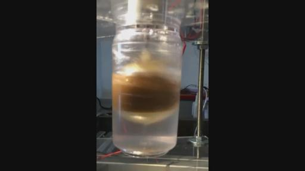
JOHN:不，它是7厘米直径的反应器。（爆音到01:14:39恢复正常）实际上就是把材料放到旋转的上面，由于这个材料的离心力的效果，它们就都集中到了中心的磁道这里，或者说在磁道的上面一点的地方，它的这种离心的效果对其内部的水的成分的效果是来自于这些甘斯的，他们利用水引进了水，它的这种分离可以很清楚的观察到，就好像是把球体拿起来往里面倒水的情况。这个水就会被倒出来但是甘斯没有出来。所以所有的甘斯都被插入到其中，实际上所有的都被分离出来，当这些水被取出来之后，就会在其中相当于留下更多的甘丝我把这个取出来的水的容量，然后往里面加入了更多的成分，所以实际上为了保持这个比例，就是能够保持在我的这个装置当中甘斯成分的比例，所以实际上这样整个过程在金属板上必须停止，后期我们还会对这个问题进行关注，那么我现在也没有办法说清楚会是什么时候，可能会在1-2星期之后吧。
VINCE：好的，就是说一直都要用同样的容器来做这个实验，就是说这个容器当中必须是同样的材料。
是不是都要用容器当中的液体，就是容器中的成分，就是你放入其中的那些呢？是不是意味着是同样的材料呢（01:16:46听不清） <？
JOHN：它并不意味你用的是同样的材料，可能会是不同的材料，它也会允许不同材料的分离，制造出不同的磁场制造出不同的层，这样就会在不同的层当中制造
出不同的磁场，它就可以让我们拥有不同的磁引力场，所以这也是下一步我们要做的一些实验，首先它的机械方面的问题要得到解决。
VINCE：好的，你现在能不能把甘斯的反应器称为带头的反应器呢？
JOHN：可能吧，但是我们的建议就是这个星体组合的结构，它实际上就是利用这些材料进行的，其中一个比较特别奇怪的地方就是：我的黏土做的反应器也在组合当中，它和其它的反应器比较而言就会有特别的行为表现。因为很明显，在它的里面已经出现了等离子体
但是在反应器周围它的场体很低，比如说它的环境的数值是45-50微特斯拉这样一个数值，这个反应器的水平是20-38微特斯拉，有时候能达到40，在它的反应器顶端和底部也会出现不同的数值，这样就会看到它其中又出现了一些等离子体，它的这个反应器的结构就是黏土制造的，经过高温烧制出来的，实际上也在制造着场体，它实际上也在吸收着地球的磁场。
VINCE：他是不是成为磁场的绝缘体呢？
JOHN：你说它是绝缘体，我感觉不是。
VINCE：因为它就成为了磁场的吸收器了嘛。
JOHN：它实际上降低了环境当中场体的数值。在整个的陶瓷反应器的周围,还有它的场体就降低了，所以说陶瓷反应器在吸引或者降低，但是事实上它在降低环境的磁场。所以它的行为表现和其它反应器是完全不同的。
VINCE：是的，就好像我从YVAN发布的视频的反应器看到的那样，他的反应器的数值是250微特斯拉的，就在他反应器周围。而你的反应器看起来是完全相反的，我只是在想如果你的反应器在降低或者吸收，实际上它所表现出来的是不是将其它的反应器中的等离子体造成了一个牵引吸收的效果呢，把它牵引到一个特定的结构当中，你是不是这样的想法呢？
JOHN：在某种程度上我想确实是这样的。我现在把麦克风交给keshe先生。
KESHE：陶瓷的反应器就好像是引力场的装置在运行，YVAN的反应器它实际上是一种不愿意保留的状态，就好像是一个磁场的反应器，这就是他们的不同，一种陶瓷的系统，由于我们也对它进行了分析，我们在他制作的过程当中也做了比例的测量，对它这些具体的情况都做了测量的数据，但是当你看到它的测量的数据是那样的情况，就是它比环境当中的还要小的时候，他实际上就意味着它是一种引力状态的装置，它有一种保持引力的状态在他的内部有这样一种情况。
VINCE：是的，keshe先生。如果它是一个引力系统的话，我想我们在几年前就讨论过类似的问题。就是有关星球星体和它的指纹的一些问题，它们就有自己的磁引力场，有的会大一些，有的磁场就相对来说低一些，我想问的是这种情况和我们正在讨论的JOHN的反应器是否类似呢？
因为刚才谈到比较低的磁场，如果我们能够以这种方式去测量它的磁场，我们是不是也可以发现在场体当中增加的情况呢？我们可否这样说呢？
KESHE：某种方式上可以这样理解，所以说当你提到在场体上出现了一种增加或减少的话，就在环境周围和环境去比较的话，它意味着实际上保持了这样的一个状态，或者它没有释放出更多的磁场，所以它这个数值就比较低，引力就更多产生吸引的力量，是向内部吸引的效果，就是你刚才提到指纹的事情，这个装置也必须要进行调整，同时要对它进行评估测量是如何来实现这一切的。（VINCE插话）你刚才说什么？
VINCE：就是你可否通过利用它的指纹改变它的参数呢？比如就去改变你反应器它的中心内核当中的鞘呢？
KESHE：你可以这样做，因为你知道整个反应器它的根本结构就是说在这个恒星系统当中，它的指纹是不能改变的，它的内核是几十亿年前形成的，大概这么长时间吧，如果你去调整，或者你能够理解它的变化，是由于环境的位置和中心星体的场体强度你就会发现它的指纹就会一直保留在那里，而我们系统的优势就在于我们制造出的装置，这些是可以进行改变的，就可以根据你是如何对这些反应器进行输气的过程来改变它的指纹的，所以针对这个反应器你能够改变它指纹的唯一方法就是通过等离子体的质量去改变，这是为什么我们过去几周对反应器每个方面进行数据测量的原因，也就是我们开始了对它整个调整和矫正，你知道对这些气体的测量在这样一个旋转速度下，就会给你这样一个场体强度，在这个过程中也会产生最大或者最小的场体强度，同时会有向内和向外的力量，所以你需要对反应器有记录。整个过程就是对反应器来说就是你有能力来改变它的指纹，实际上你能改变指纹的唯一方法就是改变等离子体的质量就像我之前解释的那样，就好像我们看到的反应器和昨天所说的反应器，就是JOHN和MARKO进行真空处理的反应器，他们决定输入氮气，他们也尝试输入了一个剂量的氢气，和2个剂量的氦气，我们实际上还没看到更多有关这个系统场体强度的改变，所以我们还会对它一些相关的成分进行改变或者设置，或者对某种设置组合进行改变来看它会有什么样的等离子体的强度，或者如何能够增加等离子体的强度，一个非常奇怪的事情就是等离子体有足够的力量来保持住强度，你改变不了它的容量，你改变不了它的强度，就像MARKO他之前所解释的那样，我们所进行测试的反应器有4个黄铜环，目的是测量里面出现的等离子体的电流，这是我们所测试的反应器整个实验的一个组成部分，当我对JOHN所说的就是他昨天所做的事情，我们也讨论了利用这些铜环来测量反应器内核当中的等离子体和电流，我们可以测量等离子体的电流，利用这些铜环来测量，所以他就制造了这些漂亮的铜环，和其他的铜环有接触，我就对他说不要碰到那些铜环，因为碰触后就会对里面的等离子体能量降低的情况。所以说在等离子体出现之前我们要测量下之前的情况，比如1.1和1.2这个状态的时候，在昨天测试中我们就突然发现在这些铜环的地方出现了一些特殊的情况，然后MARKO就说是的JOHN把这些黄铜放到了这些环的对面的地方，通过碰触这些黄铜它们实际上就在我们最后都结束了一些来测量电流的，这样就使得整个系统相当于能量消耗掉了，这是为什么数值就从1.1、1.2到6.2这个状态在它的等离子体当中，所以能量从等离子体的组合转换到物质上，也经过了这样一个测量，出现了急剧下降的情况，所以我们现在也希望能把等离子体聚集起来而不是消耗掉，因为它持续的时间还有它的速度最终会起到一个决定作用，因为这是我们几年前比利时做的实验中了解到的情况，所以你看到JOHN发出来的图片你就知道我们在说什么，他已经发布到脸谱上。
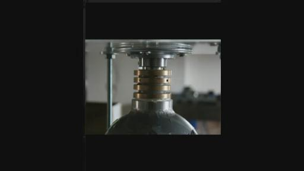
你可以看到上面的黄铜，它实际上就好像那些普通的铜线制作出来的铜环，如果你正在做我之前所解释过的反应器的话，我同样在昨天对我们的知识寻求者进行了解释，只要你碰到了内核或者实际接触到的话，因为你的身体也处于同样等离子体的状态就会改变反应器内部内核的等离子体的情况，我对JOHN和MAREK在上周也讨论这个问题，所以你在运行反应器的时候你不要去碰触它们，因为你会接受到同样的能量，或者你可以通过碰触的过程获取到能量，在夏季和我们在一起工作的意大利科学家，我们当时就向他们展示你们如何会遇到一些特别的状况，就是反应器它可能不会像你所希望它们的那样状态去运行，有点像放电的动作，（01:28:49没听清）我用到这种高压电缆，我当时就只是去翻转能量的反应器，把它带回到我就希望它能处于的状态，从那个时候凯史往后通过这种打破平衡的过程，我们就开始注意到它出现了重量降低的情况，就像我像各位建议的那样不要去碰触那些纳米涂层，同样当你运行反应器的时候也不要离得太近或者碰触正在运行的反应器，因为你会制造出一种同样和等离子体相同的状态，就像你们很多人知道的那样。我在5-6年前就在试验中因为这些情况就遇到一些问题，因为我当时离反应器太近了，就对我的肝脏产生了一些问题，并不会因为你没有看到它就觉得它不会对你产生影响，因为在你的反应器当中产生的等离子体甘斯材料跟你身体相互作用的时候是没有什么区别的，我们的星球的磁引力场就创造出了生命的条件，如果你改变了反应器的磁引力场，你就改变了不同的条件状态，这也是我一直解释希望各位能够了解的地方，就是说你在测试的时候，不要因为你在整个实验过程中太过投入忘了那些潜在的危险，这是很关键的事情。（第三次翻译截止01:30:08）
如果在这些问题上出现任何错误的话，它的代价将是沉重的，尤其是对你的健康方面。所以一定要非常小心要理解你在做什么。理解整个过程，
你身体当中的氨基酸，和你身体当中运行的氨基酸是没有任何区别的，就是和你制造出的甘斯之间是没有区别的，同时和你在反应器中制造出的等离子体的磁引力场是没有任何区别的，它们都是同样的东西，只不过是以不同的大小或者强度表现出来，我特意把这些反应器放到在地板上运行，因为根据我在德黑兰的一些经验，这些场体它不会和我内部的脏器发生相互作用还有纬度，但是事实上它们都会经过同样的过程，所以你要远离反应器不要去碰触它，当它在运行的时候一定要非常小心，注意在运行时候把反应器离你要有一定的距离，所以你能够得到的最大影响相对就小一些，一直到我们最后对整个情况有了更深的了解，可以创造这种然后可以从中获取能量，从我们的身体当中另一方面我们理解我们可以通过它为身体提供能量，要取决于材料的特点，有些甘斯对我来说是食物，但对你来说可能从你身体当中摄取能量的作用，这也要取决于它的成分，尽管我经常说我们每个人每只手上都有5个手指，都有2条腿，但实际上从内部来说，我们实际上是完全不同的，我们身体内部的形式构成都是不同的，它整个进化过程都要和环境有着一定关系，好像这些种子和植物生长的过程那样，我们的身体也会不断根据环境进行调整，这也是为什么以一种非常简单的方式我们就不会消化吸收世界某些地方的食物，因为我们的身体还没调整到可以适应这些食物的状态，以便于可以吸收它的磁引力场，那么这些都要经过一个进化，是需要时间来实现或者永远都不会实现这一点，同样的一个过程就像我上次提到的那样，在比如说太空中，我也像我们的知识寻求者解释过这个问题，我已经想不起来是否把相关的问题发布到我们的论坛上，这么一来时间当中我们能够相遇到太空当中，就像我们知道的那样在太空当中有很多其他智慧个体，比我们更加先进，实际上这是我们一直跟各位所传播的知识，其中就谈到这些智慧生命他们实际上对整个认知的要比我们人类更全面深入，更透彻一些。他们生活其中的那些飞船，他们在其中运行和太空中穿梭的飞船是根据他们的生命结构设计制造出来的，根据他们的磁引力场结构设计制造的，在任何情况下，我们都不要去和这些外星人他们，或者这些智慧生命他们的飞船中去相见，或者在你的飞船中和他们相见，如果他们能够在飞船的外面到一个地方，对它们来说是没有问题的，对你来说也是没有问题的。这个地方就可以当做相聚的地点，因为一旦你进入了他们的控制之后，你就被置入新的环境当中，处于环境当中这样一个条件之中，很有可能这种新的条件或者状态和你的氨基酸它就不会产生一个匹配的情况，那么这种情况下，所有的几率和其他相关的问题就成为可能了，同样一个情况下你都不要允许另外一个智慧生命登上你自己的飞船，无论他们如何漂亮优雅，因为他们携带的场体和场体是不同，那么他们的和你的不同，同时你整个的制作出的飞船的场体只适用于你自己，并不一定会适用于其他智慧生命，你在这个时候可以做2件事情，第一个就是你的飞行系统可以吸收他们的能量，那么这也是通过运行在一个最高的命令来完成这个事情，第二个问题就是你可能会因此致使他们丧命，或者传染给他们不同的疾病就像他们会传染给你一样，这是在太空当中最初，也就是第一个相关的规则，比如在殖民和相互交流的过程中需要注意的，如果你在飞船外面和他们能够相遇在外面的环境的话，这个环境无论对于你或者他们都是没有问题的，都是很好的地方，那就是很不错的选择，但是不要在任何情况下都不要，因为我们所说的都是有录音的，在未来的时候大家都会知道我们在这里讨论的重要规则，这也是在外太空当中飞行的一个重要条件，也是为了你个人的安全，也为了保证你生命的安全，不要进入任何其他飞船当中，也不要进入其他的飞船，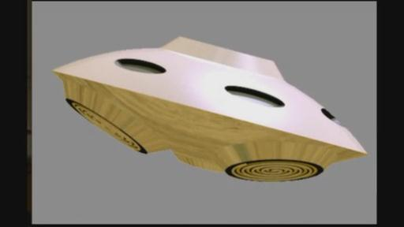（凯史基金会磁引力场飞船设计效果图）
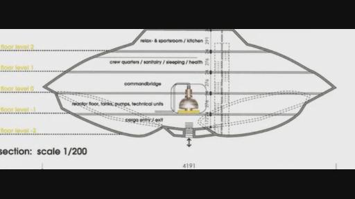（内部结构图，分为5层）
他们的生活空间，除非你能完全理解他们的这些场体和你的是适应匹配的，因为在我们的星球上它的状态在过去几百万年发生着改变，我们人类也得到了进化，最终能够适应整个星球的环境，在磁引力场上面，这些在宇宙当中其他的生命体也是经过了同样的进化过程，但是他们的场体和我们的环境和场体是不同的不匹配的，当然仍然还可以制造出生命的状况，它可以是铜制的，但是这些是在将来向更多民众传播的科技，可以制造一种平衡的环境，无论对你还是他们来说都是一种平衡环境，但是能够制造出这样一种环境它实际上涉及广泛的需要人了解的知识，所以这是我们都需要了解的事情，就是说在你制造出自己的反应器的过程中你也制造出了新的环境，在你的实验室或者车库当中，就像我之前几年所做的就是你一定要注意在实验过程中是会产生出一个新环境的，在我们在做测量的时候我总会要求知识寻求者把反应器移动到场体探测器相反的方向上，这样我们可以读取环境这些测量出的数据，这样我们就能理解等离子体的一个状态中一个数据高低的变化，这个状态应该是非常清楚，那么你不要去接受任何可以食用的食物，也不要去接受任何的拥抱，它实际上是一种礼物的赠送的传统，就是这些免费赠送的礼物都是无法拒绝的，它也是整个宇宙相互合作的这样一种方式，但是你仍然还要理解你不可能去碰那些红的草莓果，因为有的会有致命的后果的，如果你去吃它们的话，无论我们是在星球中的哪个地方，这些信息实际上都已经被隐藏在我们的DNA当中了，就是说那哪些食物就是危险的，我们都不要去碰它尝它，这个情况实际上和我们在太空中遇到的情况是一样，你不能接受食物的馈赠，也不能接受能量团的馈赠，尽管它看上去非常漂亮。
VINCE：是不是我们就需要自己携带自己的这些食物呢？或者需要的东西呢？
KESHE：是的，你可以自己携带并且自己制造，包括能量团，都可以自己去制造，食物我们所用的食用的时候有可能有其他问题，但你需要理解在接触过程中的一些情况，这种相互相遇沟通的规则实际上也是非常简单的：你所能到的能量团或者食物，他们赠送给你这些的时候是有着一个非常善意的心态的，这要取决于你自己来进行一个决定就是说它是否和我自己的状态是否能够达成匹配的情况，或者是否能够适应我自己的情况，我们也是在最
近的时候了解到这些情况，就是在我们福岛论文当中得到某些启发了解到，最初也是在2-3年前当我们给他们进行各种讲座的时候，人们经常会用一些比如拍照，当我们在举办各种讲座的过程中，比如人们经常会给我们各种各样的礼物，比如给一盒巧克力，或者他们手头有的东西，那么我们的保安人员就给我们提出意见，就是说你不要去碰触任何他们赠送给你的这些礼物，你首先需要保安人员来对礼物进行安检之后才能去接触这些礼物，因为这些礼物可能含有一些细菌在其中，那么你可能本身你的身体就不适应这些细菌，比如带有感冒病毒之类的。所以整个情况都是一样的，那么礼物本来是对于我们的生命是一种很快乐的，但是实际上有的时候我们还没有完全做好准备，它本来是一个很令人高兴的事情，但实际上我们要对它这个情况给予足够的重视，所以同样的情况在太空中所需要注意的这些礼物它会给人们带来欢乐的，它也是免费赠与的，本身也是宇宙的本性，实际上是我们作为人类本身要理解哪些东西可能会对我们造成伤害，比如你永远都不要去接受一个来自另外种族的正在运行的反应器，仅仅因为你的反应器无法运行了。你需要理解不久的将来，现在你还在地球上，谁知道你会到哪个星系出现在哪个星系当中呢？这种结构也就是他们赠与我们的这些材料的结构和我们本身是不同的，作为人类来说都是不同的，在太空当中的行为规范和我们人类这种相互交往的行为规范也不是陌生遥远的，但是我们需要理解它所有的过程，相互交往需要关爱呵护，就是关心对方，但是有的时候你能接受到的礼物它对你本身来说并不会有任何的好处，这就取决于你自己对它进行评估。
VINCE：是不是我们要有某种传感器对它来进行检测呢？
KESHE：某种程度上可以这么说，就是说在未来的这些时间比如未来几个月或者几年的时间当中，我们也可以研究出类似这样的探测器或者传感器，那么它就能够显示出不同的物质是否对我们有影响带来危害，因为这些它的数据都会有一个最高值和最低值，就是我们能够接受的这些数据，有的它可能就超出了我们能够接受最高的，就是说已经超越了我们系统的极限，当然还有一些比较低的就是亚物质状态的场体也是有害的，这也是为什么当我们的身体试图去和它匹配的时候，它就会进入亚物质的状态，最后再次返回原来状态中，亚物质这样一个领域实际上有更多的生命个体，数量要比人类还多，活在这样一个环境当中，那么也就是说在亚物质的这个环境的这些生命个体的数量将要比我们生活在物质层面的这些生命个体的数量还要多很多，实际上我们生活在磁引力场中间的区域，我们所处的位置并不是整个的比例当中极端的位置上，我们是处于中间的位置上，就是说生命实际上也会存在我们所生活的物质之下的领域中，在将来人类一定有机会和这些亚物质的生命个体进行沟通，到时候人们就会理解这一切了，即使是这样，也不意味着他们的智力水平要比人类低，实际上他们可能要比我们人类具有更高的智慧，所以这些都是我们要传授的知识。你刚才说什么？
VINCE：我完全同意你刚才的说法。
KESHE：刚才我们之前所说的并不是任何的声明，只是把一些事实说出来。所以你需要理解它整个的过程，这也是我要向各位解释的其中一件事情，我们不会仅仅告诉各位如何来制造这些装置，然后允许给位在制作这些反应器的过程出现一些错误，这实际上是允许每个人以自己的方式制造反应器，但实际上我们也要开始了解一些和这些智慧生命接触的时候的一些需要注意的指引或者指南，在太空当中的时候无论你把它称为什么，比如为命运，理解，过程这都没有什么的，无论什么都需要建立起来，一旦我们把它说出来后大家就能理解，后期我们就会采取相应的步骤应对这个事情，所以这些这就是我们在和他们相遇的时候要注意的一些事情，就好像说我们无论我们在做什么事情的时候都不要把我们的情绪发向太空中某一个，因为唯一能接受这些怨气的人就是你自己，就好像你自己打自己的耳光这样的一个动作是一样的，因为你所释放的能量团实际上已经超越了他的上限，他们知道你能的能量团的这些内容，所以最终他们不接受这个能量团的最终会返回给你自己的，所以说人类在太空当中实际上要学习的东西是很多的，他不会像在地球上人类这样是绝对不可以的。全部的过程也是非常简单的就是去理解你的生命的，你的整个过程，整个的宇宙实际上都需要处于一种平衡的状态，如果你跨越了这种平衡的状态，实际上你会对自己造成伤害，你会对自己的系统造成伤害或者损害，也会对整个社会带来伤害，实际上这和我们理解的情况也没有太大的区别。有没有任何问题的？
VITO：凯史先生你好我有一个问题。
KESHE：你可不可以把声音放大了说？
VITO：我有个问题就是之前也提到过，可不可以请你解释这个原因或者效应，它可以对电线上面造成微弱的电流，可否请你解释一下这个问题？
KESHE：请问你刚才说对什么造成影响？
VITO：对最近进行纳米涂层处理的铜线的影响，当你给铜线上面施加非常微弱的电流的时候，那么它对新制作出的纳米涂层会有什么影响呢？也就是说为什么你会对这些刚刚出现纳米涂层的铜线进行这样一种操作，原因是什么呢？
KESHE：这要根据不同的环境来看有不同的效应和影响，实际上我昨天也对ARMEN对于这个问题进行了解释，因为ARMEN就希望能够制做一些比较超出常规的，同时实现他独特的想法，但是有时候你不理解自己在做什么的时候会使得自己陷于危险的境地，就在昨天他把纳米涂层处理的铜线放到盐溶液中，之后他把铜线和电源连接在一起，然后他就开始做这些类似像倒开水出蒸汽的事情，然后他看到纳米涂层出现分离的情况，然后你看这个分离的情况，我就跟他解释他所做的事情就是将你自己置于危险的境地当中，就是这些材料会以这种方式向外释放，他正好坐在它的正上方，然后他就会把这些材料吸入吸收到自己的身体中，这也是为什么我们在这次网络教学最开始就把安全问题提出来的原因，我们实际上在几年前在根特大学（比利时根特大学简介：
http://baike.baidu.com/view/2418915.htm?fr=aladdin）的一些科学家做过实验，
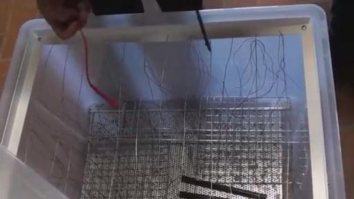
我们当时就吧这种铜线和很高的电压电流连在一起，铜线内部就出现了融化的情况，由于纳米涂层它的结构是有很多空洞的，我们可以从中看到，我们可以看到它里面融化的残留物，但是它们却到不了到任何地方，就好像是在一个BAR气压下液体里的那些线当中，那么就好像栅栏一样，相当于保留的作用，所以铜线它不会被烧毁，它们把这个科学家聚在一起，就像我昨天解释的那样无论他们能找到什么，放到桌面上来对它进行一个加群的情况，我昨天就像他们解释说如果我们能够承受1安培的话，这实际上这个现象就超越我们的认知范围了。（01：45：:05听不清）如果能够到5安培的话就可以置入所有的电压，在实验室当中所有这些瓶子当中在根特大学，所以这些铜线纳米涂层会根据它们在的环境来显示它们的效应或者影响，当ARMEN在做他的盐溶液当中，他就把甘斯最表层的这些甘斯分离出来，实际上是一种释放甘斯的方式，就是这些纳米涂层没有把它放入甘斯之中，那么在某种方式上来说它实际上是一种方式来释放这些甘斯，但另外一方面并不会出现一些同样相互作用的效应，就是材料更多是处于物质状态，而不是甘斯和纳米层的状态，但后来他也向我展示了这些铜线，这些铜线就更细了一些，要比在做纳米涂层之前更细一些，所以这是一种很明确的转换就是物质转换到纳米涂层的情况，这是非常薄的，他所制作的这些层能够达到这个效果，但是颜色并不是黑色的，而且它们并不是铜的颜色而是白色的，我就向他解释说因为他向这些铜线输入了电流的方式已经改变了纳米涂层的特征就是在铜的表层的，它现在就只会去吸收白色物质的光谱。或者说不是黑色的不是铜的原色而是白色的。实际上它就制造不同的物质，那么它仍然还是其中绿色的一部分。你可以做类似的实验
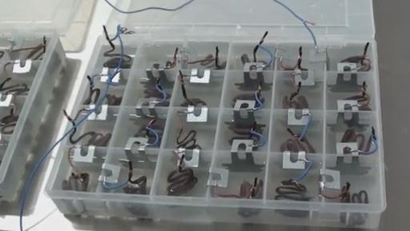
如果你做这些类似实验的话，我会非常直接向你提出一些建议，要在封闭空间环境中做这些实验，不要像ARMEN那样坐在材料上面就是面向这些材料的不要这样做，因为进入到人体之后的情况可能是致命的，如果你想对不同环境进行测试的话，那么实际上你会发现我所做的其中一个实验会是非常有趣的，就是我要做的下一个步骤就是把纳米涂层的材料放在高真空的环境，然后施加电流和高压，然后看看会有什么样的表现，但这些事情将会是在后面阶段做这些事情，我们知道它其中一部分的成分，但是另外一方面，我们也要去不断探索这项技术的维度，但是一定要注意实验过程中的安全，这是我在过去几个星期当中看到的我们需要非常注意要有一些能够负起责任的行为，就是注意它的安全，之前的那些不负责任的行为，这种做法一定要停下来改变这种方式，如果这种方式受到鼓励的话后期会出现各种各样大量的问题，我们现在要做的事情是解决问题而不是制造新的问题，在我们还没完全理解它的参数还有在食物中的所有成分之前，现在还还没有完全理解所有事情之前也就是你需要理解所有这些事情，因为我们都要意识到，就像我经常说的无论你做什么，无论你取得了什么样的成就，它实际上都是和你的环境状态有关系的，那么创建出的状态或者条件就给你提供出了元素，有的人是用了锌进行涂层，有的人用钢，或者铜材质，有的人用铝有的用镍，还有其他人用不同的成分，好的，我们知道这些事情，现在最终要的一个因素就是你在整个过程中用了多少烧碱的材料，就是用这些烧碱材料对这些材料继续拧纳米涂层的处理，这些烧碱成分是什么，很多人用的烧碱都没有看里面到底有什么成分然后就直接使用，很多人就用到工厂买到的烧碱来做，而我们是要了解这些烧碱本身内在成分具体都含有那些成分，如果你在整个溶液中有一些钾被加入到这些泡沫中就会得到不同的结果，在你的国家中用钾和烧碱混合在一起，实际上是有一些限制的相关规则，能制作产生的热量，当我们习惯高温来对黄金和银进行处理的时候，我们使用的是一种特别的混合物，就是在烧碱材料当中，如果你用那些普通烧碱材料的话你是不会取得效果的，因为你需要创建一个条件状态。
然后下一个问题就是你所使用的水，你处于地球的哪个位置你是哪个国家的，这些水中的沉淀物是什么，即是说你使用的是铜、镍、水和这些烧碱材料，即使是你使用一个房间的自来水和另外一个房间的自来水，它的结果可能都完全不同，因为在这些自来水管道当中的锈的元素也是非常不同的，因为一些非常微小的改变都会造成一个不同的环境，所以它可能看上去不会对你带来任何伤害，但是它可能对别人带来伤害，所以这些事情都需要一个明确出标准，但是现在来看很明显还米有人理解这一切，所以我们现在要非常小心睁开我们的双眼，不要像之前我们在疾步狂奔的那段时间的效果那样，因为如果你不注意这些细节可能会对你带来很多问题，还有对你的下一代都会带来问题，因为你所面对的是磁引力场还有等离子体的状态就是甘斯，还有或多或少就在它这样一个级别上，就像你可以看到的黑色它就吸收光谱这个场体，所以它实际上也含有你的DNA，所以你可以改变你的的DNA，让这些将会加入行列中的科学家还有相关政府部门，就像他们可能正在收听我们的节目知道我们手里桌子上有哪些东西，让他们派出更多的相关领域的专业人士，哲学博士，更多医生教授来进行这些相关的研究工作，比如说可以给他们甘斯领域的教授等等这些称呼，可以在这些领域产生很多新的头衔，但是至少要让他们在之前要理解整个科技或者知识的全部内容，在这项新的科技会有更多的工作需要完成，它要比我们人类想象的要更多一些，但是能够允许我们理解这些参数的特征。
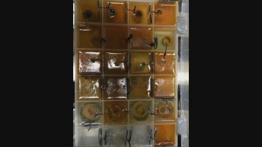
KESHE：对，就是这种非常微弱的电流。它仍然也是有不同效果的，完全不同的。它实际上就是和我之前说到的JOHN的新反应器的黄铜这些材料是一样的，用这些黄铜它碰触到内核，我们实际上就已经把这个能量降低。当你去使用到电压电流表的时候它会显示出它的电流电压，实际上这个过程你就已经在纳米涂层中产生了能量降低耗尽的情况，这样JOHN也在问我，MAREK也在相当于鼓励我，MAREK也在鼓励他说你赶紧去问他手电筒的问题，我就向他简单的解释说之前展示的手电筒它和你们现在制造出的纳米材料实际上没有任何区别，但是我们做的就是以一种方式加入到铜线中，也就是我们可以把非常微弱的电荷用电容收集起来，然后做了个电路，那么这些它不能够非常简单的加个电容组成电路就行了，实际上你还需要在环境中通过纳米涂层吸收非常微弱的电压电流，然后才能够把这些电流收集起来，然后当你打开手电筒的时候然后电容它实际上就会充满的状态，光亮它的一个生命周期要取决于你的电容中储存了多少能量，电筒的光亮的强度，如果你改变位置的话如果你去制造这样一个手电筒的话，如果你把它放到地面上，我这样做了很多次。我之前那也总解释这样一个情况你可以把它放在地面的水平位置上，这样实际上会获得更多的能量，就是得到更多的充电能够充到更多的电，这是几周前我和MARKO解释可乐瓶的事情时候提到的，如果你把它放到盒子中，然后时不时拿来展示一下，在你的封闭空间当中，它们就不会受到这种充电的情况，也就是充电的效果并不会很好，因为它整个场体就已经被限制在那样一个有限环境当中，所以你需要理解这样一个过程而不是像猴子模仿见到的每个现象，你要理解它是如何制造出来的为什么被制造出来。如果来链接需要链接多少的以什么样的方式来链接，如果你制作这些铜线，是为我们所做的手电筒来做你的铜线的话，即使你在做这些绕线的时候它以一种错误的方式进行绕线的话也不会正常工作的，因为现在最终这些场体会相互作用，如果你绕反了会出现一些相反作用，因为你要面临处理的工作和问题就是直接的等离子体的相互作用接触提升的工作，我们也在一个能量盒子中看到了情况就是方盒子中我们用到了氧化铜，在盒子其中的一部分的能量会向一个方向运行，然后另外一部分向另外一个方向运行，因为用错误的方式去设置了，所以我们并没有你需要的就是一部分是引力一部分是磁力的，这样的话你的手电筒就不会亮，这也是为什么我们最初做实验的时候，光亮没有点亮的原因，这是同一个事情就是当你设置好装置的时候，当你设置好铜线的时候。
VINCE：哦，我也刚刚有了你刚才说的那种体验，在我自己的40个电池溶液的实验中，我当时就决定用另外2个溶液电池，然后加入一些经过纳米涂层处理的铜，还有一些没有经过处理的。我只是用一种普通串联的方式然后还加了一些锌，但我没有看到增加，所以我就开始去关注它链接的地方，我们看到所有的东西都链接到其中一个引线上面，然后这个引线自己都在水溶液中，实际上就是一个非常好的连接方式，所以实际上我完全看到了所说的那些情况，你绝对不可能说做好了这些链接后就想说这个一定成功，一定可以实现我们最初设定的目标，实际上你需要找到一种方式，它本身是这些材料它去做的想要完成的情况而不是你想要完成的那些事情。
KESHE：是的，因为你想进一步的来进行这个实验，就是如何让这些装置在相互定位的过程中有一个更好的关系，
他们之间的距离也会制造出一个环境，那么实际上这也是我正在等待我们的知识寻求者能够理解的一个现象，那么它们现在还没有完全理解认识到这个情况，就是他们有时候就搞不懂这个现象，如果他们吧这个盒子相互并列放到一起，比如你用的盒子都很大都是方盒子，它们都相互连在一起，它的整个环境就会成为一个固定环境被固定下来，因为它们是通过彼此定位的，如果说你有一个托盘上面有20个，然后在另外还有一个托盘有25个溶液电池，比如另外一个有6个溶液电池的话，每一个托盘上面的环境和它们之间的相互关系实际上就会产生一种磁引力场的拉力，实际上我之前就看到过这种情况也一直在等待我们的知识寻求者能够通过实验自己意识到这个问题，那么现在你就通过自己的实验注意到这个情况也意识到这个问题，如果你去改变其中一些盒子的位置的话，比如说你把最后的盒子放在最前面，然后把中间的盒子放到另外一个位置上的时候，你会发现整个运行会改变，而且我们也会看到即使是在材料内部颜色都出现了改变，然后如果你换回来原来的位置，它的颜色又会变回来了。
VINCE：实际上我在做这些实验的时候我还看到它电流电压的改变当你在做位置的改变的时候，
我当时用了一个非常简单的LED灯还有其他一些静止的材料，当我在整个电路当中加载更多的时候我看到了不同的材料。
KESHE：是的，但你需要记住一件事情。你所提取的材料的数量会制造出不同的环境条件，所以如果你加入更多的载荷的话实际上就会在盒子中制造出了不同的环境，在这些盒子当中如果你以不同的方式把他们分离开的话，我也得到一个ARMEN做的像花这样的一个情况，就是用他的装置，我们之前出来没有做过这样的实验，
在中心位置看上去像一朵花一样，用烤面包的托盘，是一种类似用不粘锅，然后它有个中心，中间有一个中心就像花一样的造型，然后它之间有孔洞，然后ARMEN就在修复这个东西，我们能够用上它，就是在6月21号进行的展示上面能够用到他现在做的装置，所以我们也在等待看他这个事情，它实际上相当于耦合中心的电池连接在了一i起，通过内部链接的，溶液电池也是通过外部链接组成了一个完整的装置，最终我们会看到它会是什么样子的。我们当然也可以做好之后有2个这样的装置，实际上我们和大家一样都希望看到一些效果，我们也希望在托斯卡纳这个地方我们的演讲中看到它的效应。（托斯卡纳会议公告文：
http://www.keshefoundation.cn/news_disp.html?itemid=164）
VINCE：它是一个3D的装置还是就是在桌子上你说的那个装置呢？
KESHE：哦，它是一个静态的像烤面包这样一个装置，你知道他用的是一种新的材料，就是塑料，相当于不粘锅的材料，里面有硅的成分，实际上是我在市场上看到的一种新的材料我觉得它很不错，我看到它中心点有一朵花，就想如果这样会出现什么样的结果呢？就是说在它的内部它的这些引线会有什么样的表现呢？外面的这些电线是和大气有关的，然后在它的中心有电线连在一起，这样相当于向中心输送能量这样种子就会出现成熟的情况，这其中是有原因的了，这是我们第一次以这样一种方式来观察花的结构的，同时也想观察在这个过程中能量是如何传输的。
LUCYANO：很抱歉，我要来插入打断一下你们的说话，就像VINCE和我们很多人都看到的那样，电流安培基本上在5毫安，有的时候会是10毫安，它实际上不会点亮任何东西包括哪些LED灯也没办法驱动亮，所以我想问的是你可否给我们大家做一个猜测就是这个能量来自哪里？
KESHE：对不起，可否重复一下你刚才说的是什么话？可不可以重新提一下这个问题？
VINCE：好的，LUCY让我来提这个问题吧。他问这个问题实际就是因为我们都看到了在等离子体的群当中看到，当然我也会把其中一些图片在群里传播让大家看到效果，当时点亮了7个LED灯，当时电压是在12伏左右，我们通过万用表可以量出来，当时电流只是3-5毫安，所以从技术上说这些LED是不应该被点亮的。（第四次翻译截止02：00：21）
那么我们当时点亮了7个LED灯泡。但是我们通过万用表量了之后发现它的电流只有3-5毫安的状态，所以从技术上讲这些LED灯是不应该亮的，所以LUCYANO的一个问题就是他想请你来推测一下那些点亮LED的能量来自哪里呢？
KESHE：是的，实际上我们之前也和来自于伊莱克特（原名：ELEKTOR，该实验室有自己发行的杂志 注：2011年11月26日KESHE演讲开场主持人就是这家实验室的人）这家实验室的一些人就观察过这种类似的情况。也就是说我们和来自ELEKTOR的一个伙计也见到过类似的现象。最初他们在上面安装一个LED灯，之后又安装了1个，之后又安装了一个。把这些LED都安装在了一个电子线路这样系统当中，我们最初也是需要一个电路的，所以你不能够简简单单一一个往上加LED灯，之后他们又拿来一个电机，然后我就以一种非常简单的方式向他们解释说。这些电线一旦你们把它们连接在一起之后呢，实际上你就进入到了等离子体的一个传输当中了。这里面就没有任何额外的，如果你不知道你去做测试的话，我之前也向我们的知识寻求者进行了展示，也就是在上周之前做了展示。你可以去检查你的电流，你会发现你的直流电和交流电它们基本上是相同的，就是说在这些电池溶液当中。这些系统中如果你要用万用表去测量的话，比如说你只是把它给转到交流电的档上，然后再转换到DC就是直流档上去测量的话，那么你会发现你的万用表最终会遭到损失，就是说你在看上面的数据或者指针就怪怪的出现故障的状态，就是说你需要买个新的万用表了。因为这些装置实际上拥有这2种电，直流交流都有。而且同时拥有，这也是由于它们之间的层，就是说你把其中一些交流电转换成了直流电，然后同时集中一部分的等离子体的能量，它会被持续的转换回能量，就好像你从电子中获取到的那样，就是说所有电子的震动就是我们所说的电流，所以实际上它并不仅仅是你可以加入其中的直流电，就是说你的安培电流不仅仅从直流电当中来的。因为你的装置当中实际上会有等离子体的一个流动，所以在这种情况下，在整个背景中它是有隐藏的交流电在其中流动的，所以不要用同样一个电表来测量它的交流电和直流电，但是如果你能够在非常非常低的状态下来测量交流电的话。而且当你在测量的时候，你只是用它来测量交流电的话，然后你就会看到它有一种组合，我想之前大约2-3年前参加过一次法兰克福的会议。然后有一个人就走到我的面前，我想我之前也跟各位解释过这个事情：他手里面拿个电池，然后它最大的输出功率应该是30瓦左右。可以作为一种新的方式让它出现48瓦的功率。它就会成为一些额外的新的免费的能源了。然后我就向这个科学家单独问了唯一一个问题。OK，大部分人都在这些装置中查看他的交流电，就是你所展示的这个电池上。那么为什么你不去向我们的观众来解释一下，也就是说你的电池中也是含有直流电的，你的电路中你可以将它的交流电也转换成直流电。所以这样的话你所展示的那些看上去是额外的电是来自于交流电的，它实际上是其中一部分的过程。这也是实际上很多人都没有理解的一个地方。所以说这个过程中你不仅有直流电，可以点亮LED的灯泡，它的电流的平衡也是来自于交流电的这一部分的。同时，你仍然还有会有个等离子的电流在你的装置当中。这样的话你整个的装置也会相应的去获取，这是为什么你不需要任何一种放大的装置，也不需要一些额外的电路就可以去在其中加上你需要的任何数量的负载，JOHN告诉我他们正在做的这些实验。JOHN跟我说你们的实验中用到了7个LED的灯泡，我就回到我们的实验室当中看到，实际上在2-3年前我们就做过类似他说过的实验，我们事实上甚至还给溶液电池的装置安装了一个小的电路。能够让这些灯泡被点亮，但实际上你们也已经获得足够的知识来理解并且去分析其中的现象，实际上没有任何东西是免费得来或者自由的来的，实际上是你需要对它进行一个分析和研究，然后知道它的根本原理了解整个的过程，你在这个过程中能获得的这些电流呢。
VINCE：我就想起来还是用一种总结性的方式说一下这件事情吧。也就是说它实际上不是电子在电流当中流动，它实际上是等离子体基本上讲在它的外围流动，因为它拥有一个磁引力场。
KESHE：你说的部分正确。但实际上在整个装置中是有隐藏的交流电，在它当中有隐藏的这些交流电，因为从部分来说，等离子体它实际上是在持续不断的转换成为它在边缘不断的转换成物质。那么当等离子体转换成物质后，那么它实际上就会实现这样一个绝缘的情况，出现这种震荡的情况。
VINCE：是不是说这种震动对点亮LED就有帮助或一定作用呢？
KESHE：是的，几年前我们的一个朋友，我希望他还活着健在。他实际上也和我一样陷入汉斯所设置的陷阱，和我的出境和遭遇是一样的。我想他可能早就因为患上癌症而去世了。我真的希望他还活着，因为他真是个天才的科学家。他是为数不多我尊敬的科学家之一，我只见过他一次面，之前他曾经设计了一个黑盒子把它交给了IMEC（微电子研究所），它的装置能够捕捉然后制造出大量的能量，然后IMEC的这些人就问我是否能够帮助来检测分析一下它的这个装置是否是真实的，能否复制这个装置，希望能够知道这个装置的运行原理，我花了半个多小时理解他的装置的运行情况，然后我就做了一个复制品，然后我就去找到IMEC这些人然后我对他们说，是的，这个伙计是完全正确的。这个装置可以正常的运行。可以输出能量。IMEC说可否给我们再做一个副本？就是再做一个，我说不行因为它是有知识产权保护的。实际上这个科学家所做的实际就是通过交流电和磁场间搭了个桥，交流电和磁场间的关系做的，一旦你开始了它震荡的状态之后，这种振荡可以把交流电转为直流电，然后在整个过程的最后再把直流电转成交流点，这样它会变成发电机，但是却不需要输入任何其它的东西，在电子世界中，对这种现象有个术语，我想他们把它叫“搜刮”（专业词不明，相当于把微弱的电流收集在一起），你去搜刮的是交流电，不是直流电。这就是它整个过程的一部分，但在这样水平上由于你要面对的是等离子体，就好像昨天john对反应器做的事情，（非常感谢），实际你是去搜刮这些等离子体，它实际和电子的等离子体的量是相同的，因为它实际上是最接近于它的等离子体秩序最低的位置，在你所使用的物质的结构当中，所以你的钢里面仍然还有电子，它就总会走向最低的？（02:07:20某词听不清NAMINATION？）就是等离子体电子，所以在<如果你仅有质子在你的反应器中的话，也就是说你的反应器由质子组成的，你的能量级别，或你吸收的电流呢就会和质子相同，所以它并不是隐藏的能量，实际上我们需要正确的方式理解，这里有交流电、也有直流电，之所以有这些是你持续不断地降低能量，其中一部分的等离子体它就要在它的边界实现一种转换，以便能够让它的环境大气提供保护，这样它会释放出一部分的能量，这样你可以吸收这部分能量，就是在这过程了搜刮一些等离子的能量，它实际就和电子的振动出现相等的情况，这也是你的交流电的一个来源，所以你的大部分的能量都来源于交流电转换成等离子体而不是直流电这部分的流动。
VINCE：是的，当然这是反映器静态反应器的表现，它不是动态反应器。
KESHE：不是，不是。实际在同时，如果你使用像星体组合的反应器结合在一起的结构呢，或者我们所称的所谓的1-3-6,或者1-3-12的结构的反应器，你也可以做这些的事情。你可以在某些点上制造某些流动，就在反应器中而不是在反应器内部。是的，因为它整个的场体呢实际会穿越你整个的飞行器的周围，然后在某些特定的位置，特别的等离子体就会出现这样的转变：把它转变成质子等离子体，转换成电子的等离子体，和它相同的。在设计这些飞行器的时候呢。（VINCE插话）请让我解释完再回答你的问题。在设计你飞行器的时候呢，实际就好像你在收集地球上的东西连接地球，在你整个装置的周围你都在收集它的这些场体，实际上就是等离子体能量团，也就是我们所称的电子团这种装置。因为这些电子，也就是由于这些等离子体的状态呢，它们就可以制造出相互的影响。第二点他们也可以制造出中子的激增，所以你要避免类似这样事情的发生，请继续问问题吧。
VINCE：抱歉，我刚才想说在您提到的振荡中呢，你实际就可以制作一个在他们周围的飞行装置，这也是因为它有振荡的现象。
KESHE：是的。还是回到我刚才提到的那个和IMEC有关的天才的比利时科学家的事情，他当时就拿到我们一个纳米涂层的铜线，和DIRK（注：DIRK为凯史科技专利的书写者）做这些实验的，然后他们把铜线和示波器链接在一起后，把铜线的另一端放在一杯水里，他们在示波器上观察到这些纳米涂层线的表现就像电容一样，它是能量的电容也是能量的制造者，我记得他当时的示波器图表我不知道放在那里，但是我还有这个图。这是DIRK给我的。如果你把它和电线连在一起，然后对它进行纳米涂层的处理，然后把它放在纯水里，你就可以在示波器看到峰值还有它的相当于波峰，也就是说它能制造出的电流，所以它实际上非常清楚表明你做出的纳米涂层的铜线它即是能量的吸收器同时也是能量的制造器。也是一个能量的传输器，实际它只需要我们去理解如何实现这些事情。是不是？
VINCE：是的，我们需要改变它的一个极。同时还要改变探针的位置，然后才能够决定你所需要的状况的一个正确的位置。
KESHE：差不多是这样的。就好像是我们有的所有这些变量呢，在电子实验室中拥有的变量变压器，它会随着你的电流的变化，它上面的曲线也是波动的，也包含它的电压。
VINCE：你是否说的就是自由变压器呢？
KESHE：是的。实际你需要理解整个的结构，很简单的就是你观察的这些实物整体的结构，其中的一个金科玉律就是，实际上没有自由能源的存在，也就是没有免费能源存在。它一定有一个源头，你需要理解它产生的过程，然后你就可以根据你的需要来发挥借助这样一个优势来使用它，昨天我也和我们的知识寻求者进行了一次讨论，就是说我们也希望我们这些意大利的同事，他们正在做发电机开发工作。ARMEN到了，<早上好。他刚起床。（笑）实际上发生的这些事情就是，整个的过程我希望他们能经历的过程呢，实际上不一定要只是做一个普通的发电机，然后把它和能力输入的一端（住宅的）链接好，实际我们一直希望制作出，当然我们也希望他们能够做好这样的一种类型的发电机，实际上我希望他们最终做出来的发电机能直接进入无线能量传输的状态。这也是MAREK说的，这也是特斯拉曾经要完成的一件事情。就相当于说他把能量放在其他地方，然后其他人可以即时提取能量。通过利用我们这项等离子体技术你就不需要把能量传输到各个地方了，因为等离子体有源源不断的能量输出，但是我们这样一个想法，就是比如你把它和第二个接收器连在一起，比如等离子体的接收器，比如在你的电脑上的，或者把它和你的冰箱连在一起，这样一来就不需要电子也就是电线的链接了，所以实际你可以把你的平板电脑拿到其它房间继续使用，然后它也可以通过你中心的地方来进行充电，因为他们的链接已经建立起来，就可以实现即时的充电，同样你的冰箱不需要插电源了，我们也希望我们能够在未来几天当中将第二代接收器或冰箱的设计提交出来，然后我们可以对它测试然后各位就可以理解，就是说即使是从一个反应器到另外和一个反应器中，它实际上不仅仅通过等离子体的传输，这是其中一部分，另一部分也是通过电子的传输，通过电流的级别进行传输，就是电子的振动。arman刚来，他今天也做了一个非常不错的实验，他用一个球形体，看上去像是透明的，我让他给大家解释一下。
LUDMIL：我可否提个简短的问题，然后让ARMEN回答？
KESHE：当然可以。早上好，LUDMIL。
KESHE：这要看你的氮的一个水平，还有它和你身体周围的相互作用。还有它在你肺部的状态间进行相互作用的情况。
LUDMIL：是的，它是否就意味着所有人如果他们肺部有积水的话，如果我们在这样的状态下降低氮的含量，是否对这个人肺部积水的去除有帮助作用呢?
KESHE：不会的，你实际需要理解肺部整个运行的一个级别，然后才能对它进行一个调整，这是我之前说的一个事情，这是在之前的健康教学里提到的事情。就是你可以调整氮的含量，或者你可以选择不同额外的氧或碳的同位素，在你输入到患者身体里的氧、碳的同位素，你这样就相当于改变了它的状态，我之前解释或，当时解释给了伊万因为他本身就是医生，牙医，但有医学背景。我上周给他解释这个情况，那么他现在也在这里。很多人在谈论的事情就是死亡密码，就是比如细胞的死亡密码，实际它能使细胞死亡，或者它作为细胞的功能，就丧失了细胞的功能。当细胞里的DNA逐渐衰竭后，如果你有一个新细胞的话，它的DNA也会处于非常正确的状态，也会有一个不同的结构，也就更容易被打开，随着它的能量逐渐被使用掉，它和氨基酸的结构有一定的链接，在DNA的整体结构中立有一个后脊（主干网）结构，在其末端在DNA结构崩溃时它就被降低到了一个水平，就是它没有办法对自我进行传输，就在这个时候细胞就停止了作为一个细胞应该拥有的功能，就是说已经失去了这个细胞最初的作用，所以实际上它也是去理解整个的过程，去理解它整个的状况，所以说在肺部它也有同样的情况，在其中会有氮气的成分，有氮气后会制造出电离的情况，所以当你改变了它的尺寸后，它就非常类似于不同的压力制造不同物质的组合，就是说固态气态还是液体的，当你改变了它的磁引力场，你就制造出不同的状态，这种状态在肺脏结构中，最终导致了在肺部中这些氢气的连接，实际是氦的链接，它和你肺部中的氢和氧连在一起，这样一来它会立刻制造出水分，在肺部制造的水是由于氮气出现了”闪耀“的状态，它就导致了对于氦气的提取，从氧气中提取了氦气，所以当你做了一个非常小的改变后，你就会制造出更多的氢气，或者说你没有在肺部中对氢进行电离，然后同时在肺部中还有氧气的输入，氧气和这些氢气连在一起后就会在肺部产生水分，它的速度是非常快的，实际只需要几小时就可以在肺部制造几升水，如果你去测量患者呼入的空气的容量的话呢，实际你就能够知道它制造出了多少的水，能够有非常好的测量。这些水并不是来自内部脏器，因为不然的话，整个身体都会被它吸干的，比如你发烧了不断出汗，你就会出现脱水的情况，实际上这些人他们从未问这样一个非常简单的问题，就是为什么这些患者没出现脱水的情况呢？如果有这么多的水都进入了肺部的话，如果说这么的水都是从内脏提取的，那么人体就为什么没有出现缺水的情况？比如肾脏就无法工作，因为我们没看到这个情况的出现，这也是整个医学界都没完全理解的问题，所以在很多方式上，通过改变肺部的环境，比如你可以打开肺部或者你能够对患者的胸膛切开的话，这样你就会改变肺部当中的压力，这种肺炎或者在人体当中水的提取，也会在人体当中出现一种自动的变化，甚至说这些水会自动的出现一种蒸发的情况，你不需要去对它进行提取，实际上我们在7-8年前对这些事情就做过实验而且取得了巨大的成功，我们已经完全理解了它整个运作过程，实际上也是我之前提到的一个内容就是说在过去这些年当中我们经常针对某个医学领域进行研究，由于医学界的这种目前的状况，我们也一直在跟踪他们这样虚伪的一个做法，如果你去问一个医生说肺部的这些水是怎么来的？为什么我们的肾脏没有出现衰竭的情况？因为据说你已经处于脱水的状态，就好想你在沙漠当中行走半个多小时，然后耗尽了半升水，那么为什么在你的肺部当中还会有3-4升的水？为什么这个人还活着，然后他的肾脏这些器官为什么还能正常运行呢？因为这些水实际上上是从你所呼吸进来的空气中制造出来的，是你自己来控制着吸入的这些空气的，所以你所以你可以持续运行下去。所以人不会因为肺炎而死，或者说人们不该因肺积水而死，我实际之前在医院的时候做过同样类似的事情，当时我遇到一次事故，这也是3-4年前的事情我当时从马上摔了下来，我完全理解肺炎给患者带来的痛苦，我所做的就是在我的肺部中创建了一种状态，我当时也在医院里面，就是我当时就停止了将肺部中看上去发出一种绿色的状态的物质咳嗽出来的动作，由于当时摔下来对我的肺部有一个我不知道肺部是否刺穿了，所以我的肺部环境就改变了。所以我可以看到它，最终差不多花了2到3天，然后这个事情就结束了，所以实际我不仅仅是从原理上来解释，而是我本人在实践里也经历了这个过程。到今年的6月22日就已经整整4年时间了。当时我的肋骨就摔断了，我的肺部就刺穿了，所以如果你能够理解你就能制造出它需要的条件，这也是我一直试图去向各位解释的情况，所以你不要只是去看反应器在旋转这件事情，要去理解旋转的反应器在制造等离子体，它对整个环境会有什么样的影响，如果你理解了这一切，实际上你就可以治疗好所有的肺炎，可以治好几乎一半的这些疾病，我现在把麦给ARMEN。
LUDMIL:感谢。
某人：你说的橘黄的gans有什么材料做的？因为我们做的实验的gans也是橘黄色的。我也想知道你的橘黄色的材料是通过什么材料制造出来的。
ARMEN：它是CH3，就我们知道的而言。
某人：好的
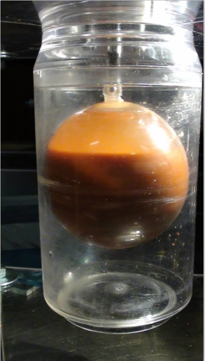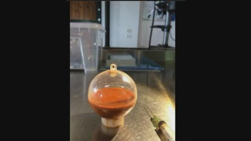（ARMEN的透明反应器）
ARMEN：如果你问我们正在制造什么材料，我没办法向你解释了。但我能解释的就是它的功能，我的理解就是，比如你去旋转他们的话，它其中比较轻的材料会向中心移动。然后你也可以在旋转过程中清晰看到这样的特点，所有的场体就会像甜甜圈面包那样的形状，以环形的形状在旋转，你可以看到轻的物质和元素会在整个环形的中间旋转。就好像你不需要提取太多的水，因为这些水会给你材料更多的灵活性，能够使材料漂浮在上面。
VINCE：比较暗色的材料会如何?就是比较暗的材料。
ARMEN：我想它是暗色的材料，我也无法回答。
VINCE：不是，我只是问比较暗的和比较淡的物质的情况，比如你刚才提到的橘黄色材料是在中间还是边缘的位置？
ARMEN：哦。他们是在中心的。
VINCE：你是否用了CO2？
ARMEN：没有，我也试图用一些，他实际是这些GANS的混合体，你知道我们旋转它们，来理解更多的知识。
KESHE：是的，当然是这样。
ARMEN：当你旋转它们的时候，水会走到底部并且是高速的，所有比较重的元素或者材料会紧贴着反应器的内壁，是的。它实际旋转的时候的形状像圆环形的面包圈（DONUTS）的。（凯史在背景说话）是的，着这样的形状。如果你去实验，留心观察就会理解我在说什么了。你会知道这是在等离子体反应器中发生的情况了。
VINCE：哦，那我想问，你的球里装的东西满吗？
ARMEN：什么？
VINCE那个球里满吗？
ARMEN：不，不满，它实际上是装了一半。
VINCE：另外一部分都是空气还是水呢？
ARMEN：是空气，我把水尽可能倒掉了。所以里面剩下的就是材料和空气，因为我当时就把水榨干了。我想它可能有一克重吧。
VINCE：我不知道你是否能回答这个问题，但是就是你是否注意到它整个的结构，它的外壁的外面的结构呢？就是你刚才提到的像面包圈的情况，在比较暗的材料是否出现？
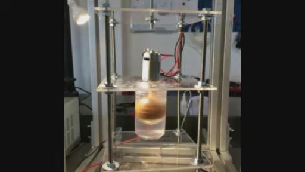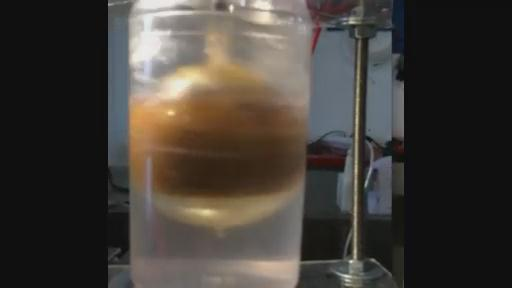
（材料在中间形成了面包圈形状，水走到反应器下面）
ARMEN：能否重复下？
VINCE：一旦反应器旋转起来后，是否在它的外面出现比较暗的材料形成了一种结构的情况呢？
ARMEN：是的，形成了一种结构。它实际出现了你的球一旦旋转，重的材料会粘附在内壁上，看上去也像圆环形的面包圈的形状。你看到的只是比较轻的材料在中心的位置上，在水里面
VINCE：哦。是这样。在球外面一切都是清晰的。我还要问，在外面看里面的时候，是否看到在这些暗色的材料上是否有出现任何形状的结构呢？
ARMEN：你是说有某种物理形状的结构？
VINCE：对的。
ARMEN：如果我有显微镜就可以回答你的问题就是在上面有什么结构，但现在无法回答你这个问题。我还要戴眼镜。
VINCE：因为你说它像<圆环形的面包圈的形状，内部也会类似的情况吧，因为里面有流体。在这个球体内部一半的部分的这些成分呢，它还是仍然处于物质的状态中，问题就是在环形面包形状里面一半还是物质的成分。所以实际上它是环形面包的形状，然后让它以这种形状不停移动。
ARMEN：对，它中心像面包圈那样旋转，在它的边缘上这些暗色材料就像是粘吸附在球体内壁上不停地旋转。实际我没有办法很精确的回答你这个问题。
VINCE：不要担心，我会自己继续观察类似这样的情况。
KESHE：我来解释这个情况，你然后你可以理解了，然后把麦克风给ARMEN。因为我想他所做的，就是让我们知道在反应器内部输入GANS的话，GANS就会以这样大家看得到的方式去运行，实际是我们的反应器在未来运行过程中需要理解的关键问题，在未来我们的反应器中也会输入GASN在里面的，我们通过它制造的方式，看到GANS在其中运行的美妙的情况我们还可以通过它理解运行的整个的结构，比如，我们在把JOHN的陶瓷反应器封闭起来后，里面运行的效果我们可能就不知道了，但是通过他的制作后我们就知道是如何运行的了。实际上所发生的就是，你用到了GANS的材料，在外面会看到深颜色材料实际上具有更高磁引力场强度，这些材料都被吸附到内壁上，另外的橘黄色材料，我刚才时候的是比较深色的橘黄色材料，还有些材料是直接从空气里被分离出来，就是从水中分离出来，在空气里的另外的材料，当它转动后出现这样的离心的力的效果，在这样离心力的情况下第二个的GANS就会出现了，然后会出现在环形面包圈形状中心的地方，它并不会出现在更高或更低的位置上，它之所以出现这样的情况是因为GANS的材料有一些被粘附在内壁上面，就制造出了自己的磁引力场，而第二个就是淡颜色的橘黄色的材料也有自己的磁引力场，所以这两者由于有磁引力场定位关系，就会形成一个间隙，所以第二种材料当它一旦启动了反应其内核之后它就会起来，它也就再也不会和那些被粘在内壁的材料粘在一起了。就会漂浮起来，然后水会还处于这个结构的底部，然后当反应器停止时会再次落下来，但实际的情况和你看到的纳米涂层的铜线的表现情况是一样的，你没办法把2个纳米涂层处理的铜线焊接在一起，也就没办法进行焊接，没办法把将两者通过这样类似的办法连在一起，因为他们都具有各自的磁引力场，这样就会在他们之间形成间隙，实际上形成的就是磁引力场的间隙。这实际上就像台风，但是这是物理性的特性。（第五次翻译截止02:30:02）